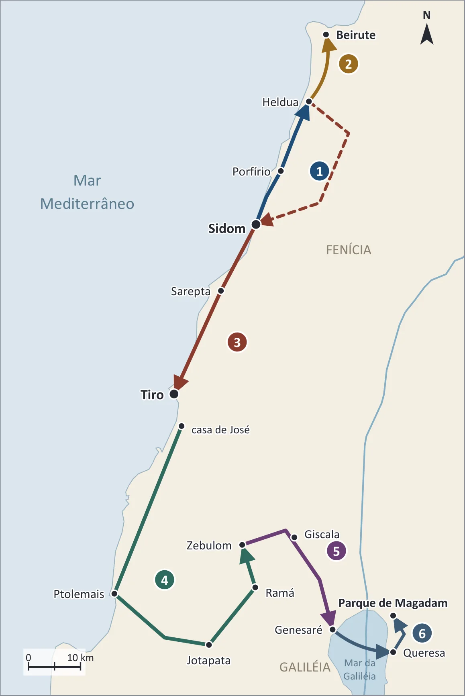
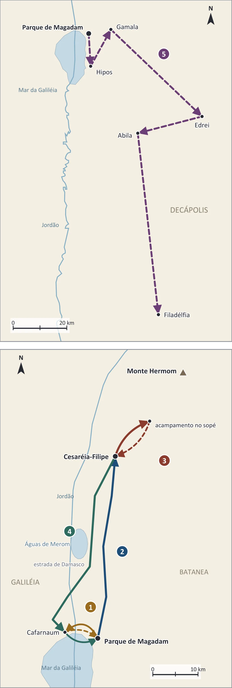
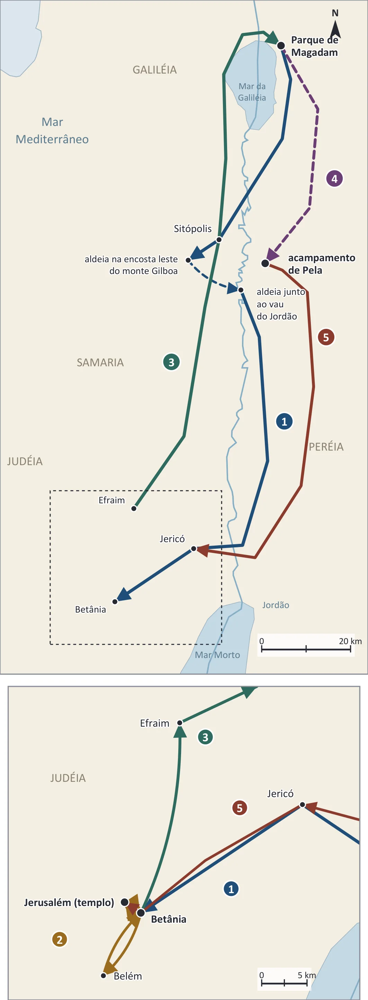
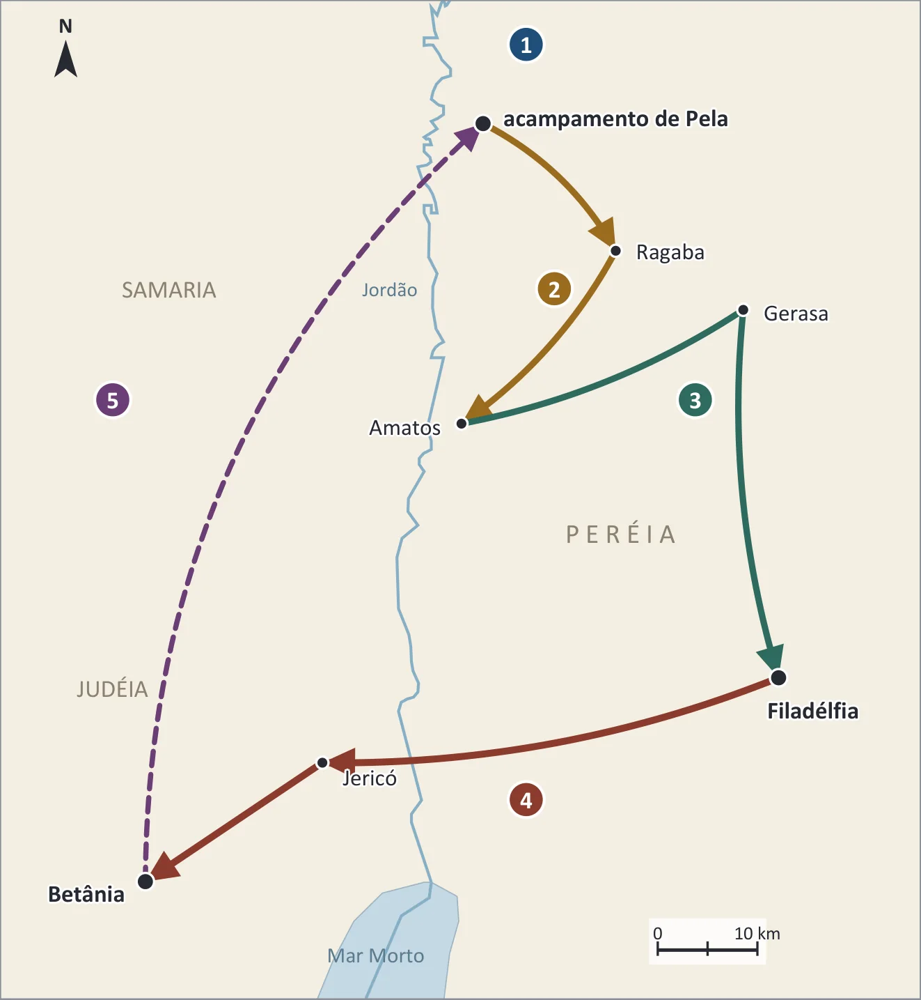
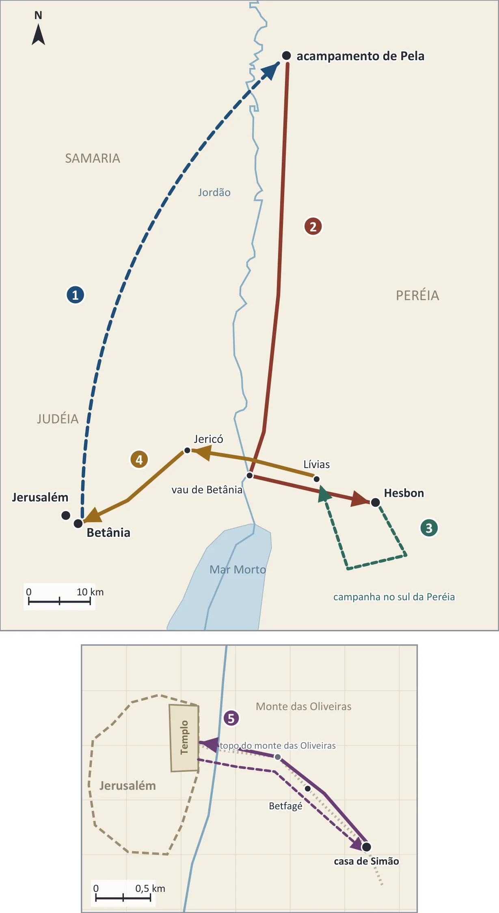

Parte V Os últimos meses do ministério público
Documentos 152–170
Documento 152Os Acontecimentos que Levaram à Crise de Cafarnaummarço – abril de 29 d.C.
| Acontecimento | O Livro de Urântia | Bíblia |
|---|---|---|
| A caminho da casa da filha de Jairo | 152:0.1–3 | Mt 9:1, 18-19; Mc 5:21-24; Lc 8:40-42 |
| Quando o barco de Jesus voltou na terça-feira de manhã, uma grande multidão o esperava, e Jairo, um dos chefes da sinagoga, lançou-se aos seus pés suplicando-lhe que curasse a sua única filha, que estava à beira da morte. Enquanto Jesus ia com ele, a multidão o seguia e, perto da casa, uma mulher tocou a borda da sua veste.Difere da BíbliaMateus diz que a filha acabara de morrer, ao passo que O Livro de Urântia, como Marcos e Lucas, diz que ela estava à beira da morte e acrescenta que havia novos observadores do sinédrio na multidão. | ||
| A mulher com hemorragia | 152:0.2–3 | Mt 9:20-22; Mc 5:25-34; Lc 8:43-48 |
| Num beco estreito, a caminho da casa de Jairo, uma mulher afligida havia muito tempo por uma hemorragia tocou a borda da veste de Jesus e foi curada. Percebendo que uma energia de vida emanara dele, Jesus chamou-a e disse que a fé dela a havia curado; tocar a veste era apenas a parte supersticiosa, e a cura viera da fé.Difere da BíbliaOs Evangelhos descrevem uma mulher sem nome, doente havia doze anos, ao passo que O Livro de Urântia a chama Verônica de Cesaréia-Filipe e diz que Jesus não quis conscientemente a cura e que o toque na veste era superstição. | ||
| 1. Na Casa de Jairo | 152:1.1–5 | Mt 9:23-26; Mc 5:35-43; Lc 8:49-56 |
| Na casa de Jairo, um servo disse que a filha estava morta, mas Jesus entrou com Pedro, Tiago, João e os pais, tomou a menina pela mão e mandou-a despertar e levantar-se. Ele explicou que ela estivera em coma após uma longa febre e não fora ressuscitada dos mortos, mas os apóstolos não quiseram acreditar.Difere da BíbliaOs Evangelhos apresentam a menina como morta e restituída à vida (Lucas diz que o espírito dela voltou), ao passo que O Livro de Urântia diz que o próprio Jesus explicou que apenas a despertara de um coma. | ||
| Dois cegos e um menino mudo | 152:1.3 | Mt 9:27-34 |
| Quando Jesus saiu da casa de Jairo, dois cegos guiados por um menino mudo seguiram-no, clamando por cura. A fama de Jesus como curador estava então no auge, e ele parecia tão exausto que os seus amigos temiam que desfalecesse.Difere da BíbliaMateus diz que os dois cegos recobraram a vista e que um mudo endemoninhado falou, ao passo que O Livro de Urântia diz apenas que eles clamavam por cura, não registra nenhuma cura e faz do menino o guia deles. | ||
| Mapa 27Subida a Jerusalém e, depois, para o nortemarço – junho de 29 d.C. | ||
| 2. Alimentando os Cinco MilMapa 27-① Do outro lado do lago; os cinco mil alimentados | 152:2.1–10 | Mt 14:13-21; Mc 6:30-44; Lc 9:10-17; Jo 6:1-13 |
| No domingo, 27 de março, Jesus e os apóstolos atravessaram até os parques ao sul de Betsaida-Júlias para descansar, mas o povo os seguiu e, na quarta-feira, já eram cerca de cinco mil. Com os cinco pães de cevada e os dois peixes que estavam com o jovem Marcos, Jesus alimentou a multidão, e os pedaços que sobraram encheram doze cestos.Difere da BíbliaOs Evangelhos narram tudo como acontecimentos de um só dia, ao passo que O Livro de Urântia o situa no terceiro dia, tendo ao fundo uma trama para fazer de Jesus rei, e o chama de seu primeiro e único milagre da natureza conscientemente planejado de antemão. | ||
| 3. O Episódio da sua Coroação como Rei | 152:3.1–3 | Jo 6:14-15 |
| Quando a multidão bem alimentada gritou a uma só voz para fazê-lo rei, Jesus subiu numa enorme pedra, declarou que o seu Reino não é deste mundo e disse a todos que voltassem para casa. Muitos partiram desapontados, e Jesus pediu a André que orasse por Pedro e foi sozinho para as colinas.Difere da BíbliaO Evangelho de João diz que Jesus percebeu a intenção deles e se retirou discretamente para as colinas, ao passo que O Livro de Urântia diz que ele repreendeu publicamente a multidão e recusou a realeza antes de ir para as colinas. | ||
| 4. A Visão Noturna de Simão Pedro | 152:4.1–4 | Mt 14:22-33; Mc 6:45-52; Jo 6:16-21 |
| Remando naquela noite sem o seu Mestre, Pedro, exausto, adormeceu e sonhou que Jesus vinha andando sobre as águas e que ele próprio andava sobre as águas e afundava. No sonho ele de fato saltou do barco e acordou quando André, Tiago e João o puxavam para fora da água, e sempre acreditou que a experiência fora real.Difere da BíbliaOs Evangelhos dizem que Jesus realmente andou sobre as águas, ao passo que O Livro de Urântia explica que foi o sonho e a visão de Pedro, e que Lucas o considerou uma visão e o deixou fora do seu relato. | ||
| 5. De Volta a BetsaídaMapa 27-② Repouso na região de Genesaré | 152:5.1–6 | Nenhum |
| Na quinta-feira de manhã, Jesus, com o jovem Marcos, voltou a pé para Betsaida. Dos cinco mil, apenas cerca de quinhentos ainda o seguiam; Jesus reuniu os apóstolos e as mulheres e repreendeu-os, dizendo que os prodígios materiais não ganham almas, e depois foi para Genesaré descansar. | ||
| 6. Em Genesaré | 152:6.1–6 | Mt 14:34-36; Mc 6:53-55 |
| Descansando na casa de um crente abastado em Genesaré, Jesus fazia conferências com os apóstolos todas as tardes. Os seus seguidores, mais de cinqüenta mil só na Galiléia, reduziram-se em menos de um mês a menos de quinhentos, e ele ensinou que os apelos aos sentimentos são passageiros e que só o apelo ao espírito residente dá frutos.Difere da BíbliaOs Evangelhos dizem que os doentes de Genesaré eram curados ao tocar a sua veste, ao passo que O Livro de Urântia diz apenas que ele descansou ali e ensinou os apóstolos, sem relatar curas. | ||
| 7. Em JerusalémMapa 27-③ Subida a Jerusalém para a PáscoaMapa 27-④ Volta pelas cidades da costa | 152:7.1–3 | Nenhum |
| No domingo, 3 de abril, Jesus partiu só com os doze, passando por Gerasa e Filadélfia, e chegou a Betânia em 6 de abril; proibiu o ensino público durante a Páscoa. Deixando Jerusalém em 24 de abril, passaram pelas cidades da costa e voltaram a Betsaida em 29 de abril. | ||
Mapa 27Subida a Jerusalém e, depois, para o norte
março – junho de 29 d.C. · Documentos 152–156

- ①Do outro lado do lago; os cinco mil alimentadosNo domingo, 27 de março, atravessaram até um parque ao sul de Betsaida-Júlias. Depois que os cinco mil foram alimentados, na quarta-feira, os apóstolos voltaram remando durante a noite e ancoraram perto da casa de Zebedeu antes do amanhecer de quinta-feira (linha tracejada). [152:2.1–4; 152:4.1; 152:5.1]
- ②Repouso na região de GenesaréForam de barco para dois ou três dias de repouso na casa de um crente abastado. [152:5.5; 152:6.1]
- ③Subida a Jerusalém para a PáscoaNo domingo, 3 de abril, deixaram Betsaida passando por Gerasa e Filadélfia e chegaram a Betânia tarde da noite na quarta-feira, 6 de abril. [152:7.1–2]
- ④Volta pelas cidades da costaNo domingo, 24 de abril, deixaram Jerusalém passando por Jopa, Cesaréia e Ptolemais e, depois, por terra, por Ramá e Corazim, até Betsaida, aonde chegaram na sexta-feira, 29 de abril. No dia seguinte ele falou na sinagoga de Cafarnaum. [152:7.3; 153:1.1]
- ⑤Escapando da prisão, para perto de QueresaNa manhã de domingo, 22 de maio, atravessaram remando até perto de Queresa e passaram a noite no parque, um pouco ao norte. [154:7.1–3; 155:0.1]
- ⑥Duas semanas em Cesaréia-FilipePartindo na segunda-feira, 23 de maio, pelo caminho do Jordão, chegaram na terça-feira, 24 de maio. Pedro e os evangelistas passaram duas semanas em Corazim antes de se juntarem a eles. [155:2.1–3]
- ⑦Por Luz até SidomPartindo na quinta-feira, 9 de junho, contornaram a região dos pântanos passando por Luz e chegaram a Sidom na sexta-feira à tarde. [155:4.1; 156:0.1]
Documento 153A Crise em Cafarnaumabril de 29 d.C.
| Acontecimento | O Livro de Urântia | Bíblia |
|---|---|---|
| (Introdução) | 153:0.1–3 | Nenhum |
| Na sexta-feira à noite, dia da volta a Betsaida, e na manhã do sábado, Jesus estava absorto em pensamentos, comendo pouco e quase nada dizendo. Cada apóstolo tentava adivinhar ansiosamente o que estava por vir, e Jesus saiu do meio dos seus seguidores desanimados para pregar na sinagoga de Cafarnaum. | ||
| 1. A Preparação do Cenário | 153:1.1–7 | Nenhum |
| Às três horas da tarde do sábado, a nova sinagoga de Cafarnaum reunia cinqüenta e três fariseus e saduceus de Jerusalém, mais de trinta dirigentes de sinagogas vizinhas e os observadores de Herodes. A crise iniciada com a alimentação dos cinco mil terminou com esse sermão, o ponto de virada da sua popularidade, e Jairo manteve a palavra de deixar Jesus falar. | ||
| 2. O Sermão que Marcou uma Época | 153:2.1–13 | Jo 6:22-51 |
| Jesus leu advertências do Deuteronômio e de Jeremias e observou que as multidões o haviam seguido pelo pão obtido sem trabalho. Apontando para o pote de maná esculpido no lintel da sinagoga, declarou-se o pão da vida e, quando um mestre de Jerusalém perguntou se ele não era o filho de José, respondeu que ele e o Pai são um.Difere da BíbliaO Evangelho de João apresenta um diálogo com a multidão em Cafarnaum, ao passo que O Livro de Urântia faz dele um sermão formal na sinagoga diante de representantes do sinédrio, começando com leituras do Deuteronômio e de Jeremias. | ||
| 3. Após a Reunião | 153:3.1–7 | Mt 15:1-20; Mc 7:1-23; Jo 6:52-71 |
| Na reunião posterior, que durou mais de três horas, um fariseu perguntou como Jesus poderia dar a sua carne para comer, e um espião de Jerusalém questionou o fato de não lavarem as mãos. Jesus repreendeu-os por anularem o mandamento de Deus pela tradição e declarou que o que contamina o homem é o mal que sai do coração.Difere da BíbliaOs Evangelhos separam a controvérsia sobre lavar as mãos do discurso do pão da vida, ao passo que O Livro de Urântia diz que ambos ocorreram no mesmo dia, na reunião posterior ao sermão na sinagoga de Cafarnaum. | ||
| “Dá-nos a tua carne para comer” — a carne e o sangue | 153:3.2 | Jo 6:52-71 |
| Um fariseu, subindo num candelabro, gritou que, se Jesus era o pão da vida, como poderia dar a sua carne para comer e o seu sangue para beber. Jesus respondeu que não lhes havia ensinado a comer a sua carne e o seu sangue, mas que a sua vida na carne era uma outorga do pão do céu e que os homens podiam tornar-se um em espírito com ele.Difere da BíbliaO Evangelho de João diz que Jesus lhes mandou comer a sua carne e beber o seu sangue, ao passo que em O Livro de Urântia Jesus nega ter ensinado isso e o explica como unidade espiritual. | ||
| Comer com as mãos sem lavar | 153:3.3–6 | Mt 15:1-20; Mc 7:1-23 |
| Quando um espião de Jerusalém acusou Jesus e os seus apóstolos de comerem com as mãos sem lavar, Jesus repreendeu a hipocrisia de esquivar-se, por meio da tradição, do mandamento de honrar os pais. O que contamina o homem, disse ele, não é o que entra pela boca, mas os maus pensamentos, a inveja, o orgulho e a calúnia que saem do coração.Difere da BíbliaOs Evangelhos fazem disso um encontro à parte com fariseus vindos de Jerusalém e mencionam o corbã, ao passo que em O Livro de Urântia é um espião que pergunta na reunião posterior, e acrescenta-se que Pedro mais tarde superou o seu medo da impureza por meio de um sonho. | ||
| 4. Últimas Palavras na Sinagoga | 153:4.1–6 | Mt 12:22-45; Mc 3:20-30; Lc 11:14-23 |
| Na reunião posterior, Jesus expulsou um espírito maligno de um jovem trazido por um fariseu de Jerusalém, e os fariseus acusaram-no de fazê-lo pelo poder de Belzebu. Jesus respondeu que um reino dividido contra si mesmo não pode subsistir, advertiu sobre o pecado de blasfemar conscientemente contra Deus e recusou-lhes o sinal predeterminado que exigiam.Difere da BíbliaOs Evangelhos trazem o sinal de Jonas e o dito sobre o espírito que volta com outros sete, ao passo que O Livro de Urântia diz apenas que nenhum sinal seria dado, exceto o que eles veriam quando o Filho do Homem partisse. Marcos acrescenta a vinda da sua família para levá-lo à força. | ||
| A cura do jovem perturbado | 153:4.1–3 | Mt 12:22-45; Mc 3:20-30; Lc 11:14-23 |
| Um fariseu de Jerusalém trouxe um jovem possuído por um espírito indisciplinado e rebelde e perguntou se Jesus podia expulsar demônios; Jesus ordenou ao espírito que saísse e designou um espírito leal para guardar o jovem. Esse foi o primeiro caso em que Jesus expulsou um verdadeiro espírito maligno, e essa possessão só existiu até Pentecostes.Difere da BíbliaOs Evangelhos descrevem um possesso cego e mudo (em Lucas, mudo), ao passo que O Livro de Urântia diz que era um jovem com um espírito rebelde e que esse foi o primeiro caso de verdadeira possessão demoníaca. | ||
| 5. Na Noite de Sábado | 153:5.1–5 | Nenhum |
| De volta a Betsaida, Jesus não comeu nada e ficou sozinho num quarto do andar de cima, e Joab relatou que cerca de um terço dos evangelistas havia desertado. Depois da meia-noite, Jesus perguntou a uns trinta seguidores se também eles iriam embora, e Pedro disse que o Mestre havia ensinado as palavras da vida eterna e que eles nunca o deixariam. | ||
Documento 154Os Últimos Dias em Cafarnaumabril – maio de 29 d.C.
| Acontecimento | O Livro de Urântia | Bíblia |
|---|---|---|
| (Introdução) | 154:0.1–3 | Nenhum |
| No sábado à noite, 30 de abril, em Tiberíades, comissários do sinédrio pressionaram Herodes Antipas a prender Jesus. Herodes recusou-se, confiando no relatório de Cuza e nutrindo um temor supersticioso por causa de João Batista, e, quando ameaçaram denunciá-lo a César, ordenou-lhes que saíssem da sua sala de conselho. | ||
| 1. Uma Semana de Recomendações | 154:1.1–3 | Nenhum |
| De 1º a 7 de maio, Jesus manteve conselhos de manhã, à tarde e à noite na casa de Zebedeu com cerca de cem discípulos provados. Na sexta-feira, a sinagoga de Cafarnaum foi fechada para Jesus e os seus seguidores, e Jairo renunciou ao cargo de dirigente principal; menos de cento e cinqüenta pessoas assistiram à última reunião à beira-mar, em 7 de maio. | ||
| 2. Uma Semana de Descanso | 154:2.1–5 | Nenhum |
| Em 8 de maio, o sinédrio decretou que todas as sinagogas da Palestina estavam fechadas para Jesus e os seus seguidores, e só a sinagoga de Hebrom recusou-se a obedecer. Jesus declarou uma semana de férias e foi pescar com Davi Zebedeu, e cuidou pessoalmente de Natanael e de Tiago Zebedeu durante uma dolorosa doença digestiva, sem milagre. | ||
| 3. A Segunda Conferência em Tiberíades | 154:3.1–2 | Nenhum |
| Na segunda conferência de Tiberíades, em 16 de maio, Herodes recusou-se novamente a prender Jesus, mas em 18 de maio concordou com o plano do sinédrio, contanto que os governantes romanos consentissem. Quando a notícia do consentimento deles chegou, na noite de 21 de maio, Herodes assinou o decreto que autorizava a prisão de Jesus pouco antes da meia-noite. | ||
| 4. Sábado à Noite em Cafarnaum | 154:4.1–6 | Nenhum |
| Naquele mesmo sábado à noite, cinqüenta cidadãos importantes de Cafarnaum reuniram-se na sinagoga e debateram até depois da meia-noite o que fazer com Jesus. Exceto alguns poucos, dividiram-se em quatro grupos, que o consideravam um fanático inofensivo, um agitador perigoso, alguém aliado aos demônios ou um homem fora do juízo. | ||
| 5. A Acidentada Manhã de Domingo | 154:5.1–4 | Nenhum |
| Antes do amanhecer do domingo, 22 de maio, um dos mensageiros de Davi trouxe a notícia de que Herodes havia autorizado a prisão de Jesus, e Davi convocou uma reunião de emergência para as sete horas. Jesus deu aos seus discípulos instruções de despedida, decidiu levar consigo os doze apóstolos e doze evangelistas e, por volta das sete e meia, começou o seu discurso de despedida a quase cem crentes. | ||
| 6. Chega a Família de Jesus | 154:6.1–12 | Mt 12:46-50; Mc 3:31-35; Lc 8:19-21 |
| Por volta das oito horas, Maria, com Tiago, José, Judá e Rute, chegou à casa de Zebedeu para levar Jesus para casa. Quando lhe passaram o recado, Jesus disse que aqueles que fazem a vontade do seu Pai são a sua mãe e os seus irmãos, e Maria desmaiou. Com a notícia de que os oficiais vinham prendê-lo, Jesus teve de partir sem ver a sua família.Difere da BíbliaOs Evangelhos relatam isso brevemente, ao passo que O Livro de Urântia acrescenta que os fariseus haviam instigado a família, que Maria desmaiou ao ouvir as suas palavras e que Jesus pretendia vê-los, mas a fuga apressada o impediu. | ||
| 7. A Fuga ApressadaMapa 27-⑤ Escapando da prisão, para perto de Queresa | 154:7.1–5 | Nenhum |
| Por volta das oito e meia da manhã de 22 de maio, Jesus fugiu de barco com os doze apóstolos e os doze evangelistas para o lado oriental do mar da Galiléia, seguido por seis dos mensageiros de Davi. Deixando o barco perto de Queresa, começaram as andanças do seu último ano, dirigindo-se, por Cesaréia-Filipe, para a costa da Fenícia. | ||
Documento 155A Escapada Pelo Norte da Galiléiamaio – junho de 29 d.C.
| Acontecimento | O Livro de Urântia | Bíblia |
|---|---|---|
| (Introdução) | 155:0.1 | Nenhum |
| Depois de desembarcar perto de Queresa no domingo, 22 de maio, Jesus e os vinte e quatro foram um pouco para o norte e passaram a noite num parque conhecido ao sul de Betsaida-Júlias. Antes de se recolherem, o Mestre discutiu com eles o plano de atravessar a Batanea e o norte da Galiléia até a costa fenícia. | ||
| 1. Por Que os Pagãos se Enfurecem? | 155:1.1–6 | Nenhum |
| Naquela noite, Jesus citou o Salmo que pergunta por que se enfurecem os pagãos, mas corrigiu as suas imagens de ira e de vara de ferro, impróprias para o seu Reino. Os pagãos concentram as suas energias nos seus objetivos, enquanto os discípulos hesitam, disse ele, e exortou-os a abandonar os anseios vãos e a construir o Reino por meio de vidas coordenadas pela verdade. | ||
| 2. Os Evangelistas em CorazimMapa 27-⑥ Duas semanas em Cesaréia-Filipe | 155:2.1–3 | Nenhum |
| Na segunda-feira, 23 de maio, Pedro foi com os doze evangelistas a Corazim, onde pregaram durante duas semanas, mas ganharam poucos convertidos, um batismo de adversidade. Jesus foi com os onze a Cesaréia-Filipe e, quando o grupo de Pedro se juntou a eles em 8 de junho, usou a parábola do semeador para ensinar o significado do fracasso aparente. | ||
| 3. Em Cesaréia-Filipe | 155:3.1–8 | Mt 16:13-19, 24 |
| Durante duas semanas perto de Cesaréia-Filipe, Jesus não fez nenhum trabalho público, mas conversava diariamente com os apóstolos. Ensinou que a verdade cristalizada em credo perde a vida, que a verdadeira religião é a lealdade às próprias convicções mais elevadas, e advertiu sobre o perigo de aceitar símbolos e cerimônias em lugar da experiência religiosa.Difere da BíbliaOs Evangelhos situam em Cesaréia-Filipe a confissão de Pedro e os ditos sobre a igreja e as chaves, ao passo que em O Livro de Urântia essa estada contém apenas conversas tranqüilas e ensinamentos; a confissão de Pedro vem mais tarde (157:3). | ||
| 4. A Caminho da FeníciaMapa 27-⑦ Por Luz até Sidom | 155:4.1–2 | Nenhum |
| Na quinta-feira, 9 de junho, os vinte e cinco deixaram Cesaréia-Filipe e, passando por Luz, chegaram a Sidom na sexta-feira à tarde. Enquanto almoçavam à sombra de uma saliência rochosa perto de Luz, Pedro perguntou por que fugiam dos seus inimigos, e Tomé perguntou em que a religião deles diferia da dos seus inimigos de Jerusalém. | ||
| 5. O Discurso sobre a Verdadeira Religião | 155:5.1–16 | Nenhum |
| Depois do almoço, Jesus distinguiu a religião primitiva, a religião do medo; a religião da mente, apoiada na autoridade tradicional; e a religião do espírito, baseada na experiência pessoal. Ao contrário da religião de autoridade dos líderes de Jerusalém, a religião do espírito exige esforço e a aventura da fé, e ele mandou os vinte e quatro encontrarem a sua resposta a sós com o Pai. | ||
| 6. O Segundo Discurso sobre a Religião | 155:6.1–19 | Nenhum |
| Por volta das três horas, à sombra de uma encosta, Jesus, a pedido de Pedro, ensinou mais sobre a religião do espírito. As religiões de autoridade dividem os homens, mas a religião do espírito os une na experiência em meio à diversidade de crenças; as provas de conhecer a Deus são os frutos do espírito na vida diária e uma vida arriscada inteiramente na sobrevivência. | ||
Documento 156A Estada em Tiro e Sidomjunho – julho de 29 d.C.
| Acontecimento | O Livro de Urântia | Bíblia |
|---|---|---|
| (Introdução) | 156:0.1–2 | Nenhum |
| Na sexta-feira à tarde, 10 de junho, Jesus e o seu grupo chegaram aos arredores de Sidom e hospedaram-se na casa de uma mulher abastada que havia sido paciente no hospital de Betsaida. Passaram cerca de duas semanas e meia na região de Sidom e, no sábado tranqüilo, meditaram sobre os discursos acerca da religião ouvidos no caminho. | ||
| 1. A Mulher Síria | 156:1.1–8 | Mt 15:21-28; Mc 7:24-30 |
| Na tarde do sábado, Norana, uma mulher síria, levou à casa de Karuska a sua filha de doze anos, afligida por uma grave doença nervosa com convulsões. Pedro e Tomé tentaram mandá-la embora e, quando Simão zelote disse que o pão dos filhos não deveria ser lançado aos cães, ela insistiu, falando das migalhas. Jesus saiu, elogiou a fé dela e curou a menina.Difere da BíbliaNos Evangelhos é o próprio Jesus quem diz que o pão dos filhos não deve ser dado aos cães, ao passo que O Livro de Urântia atribui essa observação a Simão zelote, que Jesus ouve através de uma janela, e descreve uma doença nervosa. | ||
| 2. Ensinando em Sídom | 156:2.1–8 | Nenhum |
| Ao entrar em Sidom, Jesus disse que este mundo é apenas uma ponte sobre a qual não se deve construir uma morada. Hospedado na casa de Justa, ensinava os vinte e quatro todas as manhãs, e eles pregavam em Sidom à tarde e à noite, ganhando muitos gentios. Ele ensinou a progressão espiritual e apreciou o vivo senso de humor dos gentios. | ||
| Mapa 28De Sidom ao longo da costa e até o parque de Magadamjunho – agosto de 29 d.C. | ||
| 3. A Jornada Costa AcimaMapa 28-① De Sidom a Porfírio e HelduaMapa 28-② Jesus sozinho em BeiruteMapa 28-③ De volta a Sidom, depois para Tiro | 156:3.1–2 | Nenhum |
| Em 28 de junho, o grupo deixou Sidom e ensinou durante uma semana ao longo da costa, em Porfírio e Heldua, enquanto Jesus foi a Beirute visitar um sírio chamado Malaque. Voltando a Sidom em 6 de julho, seguiram por Sarepta e chegaram a Tiro em 11 de julho. | ||
| 4. Em Tiro | 156:4.1–3 | Nenhum |
| De 11 a 24 de julho, os apóstolos e os evangelistas ensinaram dois a dois em Tiro e arredores, enquanto Jesus fez da casa de José, ao sul da cidade, o seu quartel-general. Quando Jesus falou uma vez, na tarde de 20 de julho, o templo de Melquart foi aberto para ele, e muitos dirigentes da fabricação da púrpura de Tiro acreditaram. | ||
| 5. O Ensinamento de Jesus em Tiro | 156:5.1–23 | Nenhum |
| Em Tiro, Jesus ensinou os fundamentos do caráter espiritual por meio da história do lírio branco e da sua primeira e única parábola sobre a carpintaria. Quando Natanael perguntou sobre orar para não ser levado à tentação, ele respondeu que a tentação não vem de Deus, mas do egoísmo, e deve ser vencida por uma nova afeição espiritual. Antes de partir, mandou os doze evangelistas para casa por outro caminho. | ||
| 6. O Regresso da FeníciaMapa 28-④ Ptolemais, Jotapata, Ramá e ZebulomMapa 28-⑤ Perto de Giscala, depois para GenesaréMapa 28-⑥ Por Queresa até o parque de Magadam | 156:6.1–10 | Nenhum |
| Em 24 de julho, Jesus e os doze viajaram passando por Ptolemais, Jotapata, Ramá e Zebulom até Genesaré, onde encontraram Davi Zebedeu, e depois se reuniram perto de Queresa com cerca de cinqüenta líderes remanescentes. A oposição havia arrefecido, e Filipe e Herodes Antipas mandaram dizer que não interfeririam com Jesus fora da Galiléia. | ||
Mapa 28De Sidom ao longo da costa e até o parque de Magadam
junho – agosto de 29 d.C. · Documentos 156–157

- ①De Sidom a Porfírio e HelduaNa terça-feira, 28 de junho, deixaram Sidom, subindo pela costa. Durante uma semana, os apóstolos pregaram em Porfírio e os evangelistas ensinaram em Heldua. [156:3.1]
- ②Jesus sozinho em BeiruteEnquanto isso, durante três ou quatro dias, Jesus visitou a cidade costeira de Beirute, onde conversou com um sírio chamado Malaque. [156:3.1]
- ③De volta a Sidom, depois para TiroNa quarta-feira, 6 de julho, todos voltaram a Sidom e ficaram na casa de Justa (linha tracejada). No domingo de manhã foram para o sul passando por Sarepta, chegaram a Tiro na segunda-feira, 11 de julho, e ensinaram ali até 24 de julho. Jesus manteve o seu quartel-general na casa de José, ao sul de Tiro. [156:3.2; 156:4.1]
- ④Ptolemais, Jotapata, Ramá e ZebulomPor volta do meio-dia do domingo, 24 de julho, deixaram a casa de José e ficaram um dia em Ptolemais. Na terça-feira foram para o interior pela estrada de Tiberíades até perto de Jotapata; na quinta-feira, pela trilha de Nazaré ao monte Líbano, até Ramá, onde ficaram durante o sábado, e chegaram a Zebulom no domingo, dia 31. [156:6.1–2]
- ⑤Perto de Giscala, depois para GenesaréDeixando Zebulom, viajaram até o entroncamento com a estrada de Magdala a Sidom, perto de Giscala, e dali para Genesaré, na margem ocidental, ao sul de Cafarnaum, para encontrar-se com Davi Zebedeu. [156:6.3]
- ⑥Por Queresa até o parque de MagadamNaquela mesma noite um barco levou-os para perto de Queresa. Depois de um dia de repouso nas colinas, seguiram para o parque onde os cinco mil haviam sido alimentados e realizaram ali conferências durante três dias. [156:6.4; 157:2.1]
Documento 157Em Cesaréia-Filipeagosto de 29 d.C.
| Acontecimento | O Livro de Urântia | Bíblia |
|---|---|---|
| Mapa 29A transfiguração no monte Hermom e a campanha na Decápolisagosto – setembro de 29 d.C. | ||
| (Introdução)Mapa 29-① Travessia até Cafarnaum | 157:0.1–2 | Nenhum |
| Jesus combinou encontrar-se com toda a sua família de Nazaré no domingo, 7 de agosto, na oficina de barcos de Zebedeu, em Cafarnaum. Mas fariseus de Jerusalém estavam acampados à porta da casa de Maria, vigiando-a, de modo que a família não pôde sair, Jesus desistiu da visita e, mais uma vez, não conseguiram encontrar-se. | ||
| 1. O Coletor de Impostos do Templo | 157:1.1–5 | Mt 17:24-27 |
| À beira do lago, perto da oficina de barcos, um coletor do imposto do templo perguntou a Pedro se Jesus pagava o imposto do templo, e Pedro apressou-se em afirmar que sim. Sem dinheiro, Jesus mandou-o pescar e vender os peixes para pagar o imposto dos três, e um mensageiro de Davi e o seu amigo pescador entregaram a Pedro cestos de peixes, e assim o imposto foi pago.Difere da BíbliaMateus registra o milagre de um siclo encontrado na boca de um peixe, ao passo que O Livro de Urântia diz que o imposto foi pago com a venda de peixes, com a ajuda do mensageiro, e que a história do siclo nasceu de uma observação meio humorística de Jesus. | ||
| 2. Em Betsáida-Júlias | 157:2.1–2 | Mt 15:39; 16:1-12; Mc 8:10-21 |
| Na segunda-feira, 8 de agosto, mais de cem crentes, evangelistas, o corpo de mulheres e fariseus reuniram-se no parque de Magadam, perto de Betsaida-Júlias. Depois de rejeitar a exigência de um sinal na reunião pública, Jesus realizou uma conferência à noite que decidiu uma missão conjunta na Decápolis, e advertiu-os a guardarem-se do fermento dos fariseus e dos saduceus.Difere da BíbliaOs Evangelhos trazem a advertência sobre o fermento numa conversa no barco com discípulos que se esqueceram do pão, ao passo que O Livro de Urântia a apresenta como uma longa admoestação no encerramento da conferência da noite, sem mencionar pão. | ||
| Os fariseus pedem um sinal de autoridadeMapa 29-② Para Cesaréia-Filipe | 157:2.1–2 | Mt 15:39; 16:1-12; Mc 8:10-21 |
| Na reunião pública que precedeu a conferência particular, fariseus interromperam e perturbaram o encontro, e o seu líder exigiu um sinal da autoridade de Jesus para ensinar. Jesus respondeu que eles sabiam discernir o aspecto do céu, mas não os sinais dos tempos, e que nenhum sinal seria dado a uma geração hipócrita.Difere da BíbliaMateus diz que nenhum sinal será dado, exceto o sinal de Jonas, ao passo que O Livro de Urântia não menciona Jonas e acrescenta que um sinal já foi dado aos que querem conhecer a verdade. | ||
| 3. A Confissão de Pedro | 157:3.1–7 | Mt 16:13-17; Mc 8:27-30; Lc 9:18-21 |
| Na terça-feira, a caminho de Cesaréia-Filipe, Jesus e os doze sentaram-se sob amoreiras para o almoço, e ele perguntou pela primeira vez: “Quem os homens dizem que sou?” Quando perguntou quem eles diziam que ele era, Simão Pedro exclamou que ele era o Libertador, o Filho do Deus vivo, e os outros onze levantaram-se em concordância.Difere da BíbliaOs Evangelhos situam isso na região de Cesaréia de Filipe, ao passo que O Livro de Urântia o situa num almoço a caminho de lá, faz Pedro dizer “Libertador” em vez de “Cristo” e diz que os onze se levantaram para aderir à confissão. | ||
| 4. A Palestra sobre o Reino | 157:4.1–8 | Mt 16:18-20 |
| Ao meio-dia da quarta-feira, no jardim de Celsus, Jesus perguntou se os apóstolos ainda mantinham a declaração de Pedro, e Pedro afirmou de novo que ele era o Filho de Deus. Jesus disse que essa confissão era uma revelação do espírito do seu Pai e que sobre essa rocha ele edificaria a irmandade espiritual, e deu aos apóstolos as chaves do Reino exterior.Difere da BíbliaMateus diz que Jesus deu pessoalmente a Pedro a rocha e as chaves do Reino para edificar a igreja, ao passo que O Livro de Urântia diz que no dia seguinte ele fundou a irmandade espiritual sobre a confissão dos doze, e que as chaves significavam autoridade sobre as questões sociais e econômicas. | ||
| 5. O Novo Conceito | 157:5.1–3 | Nenhum |
| O que havia de novo na confissão de Pedro era o claro reconhecimento da divindade de Jesus como Filho de Deus. Como o conceito judeu do Messias não incluía divindade, Jesus desistiu de tentar modificar esse conceito e decidiu revelar a sua divindade, edificando o Reino sobre a natureza conjunta do Filho do Homem e do Filho de Deus. | ||
| 6. Na Tarde Seguinte | 157:6.1–15 | Nenhum |
| Jesus e os apóstolos ficaram mais um dia na casa de Celsus, e naquela noite chegaram os mensageiros de Davi Zebedeu com fundos. Com a confissão de Pedro, Jesus entrou na quarta e última etapa da sua vida na Terra e, no jardim, fez novas declarações sobre as obrigações da filiação, a sua unidade com o Pai e a sua partida próxima. | ||
| 7. As Palavras de André | 157:7.1–5 | Nenhum |
| Naquela noite, André conversou em particular com cada apóstolo, exceto Judas Iscariotes, e, preocupado com a atitude de Judas, contou-o a Jesus tarde da noite. Jesus disse-lhe que continuasse a confiar em Judas e que nada dissesse a ninguém. Na sexta-feira de manhã, 12 de agosto, Jesus disse aos apóstolos que se preparassem para ir ao monte Hermom. | ||
Mapa 29A transfiguração no monte Hermom e a campanha na Decápolis
agosto – setembro de 29 d.C. · Documentos 157–159

- ①Travessia até CafarnaumNo domingo, 7 de agosto, Jesus atravessou com André e Pedro para encontrar-se com a sua família, mas o encontro não aconteceu. O imposto do templo foi pago e, quando escureceu, voltaram remando em direção à margem oriental (linha tracejada). [157:0.1–2; 157:1.1–5]
- ②Para Cesaréia-FilipeNa segunda-feira, 8 de agosto, uma conferência no parque; partiram na terça-feira de manhã cedo. Passando ao sul das Águas de Merom, Jesus perguntou: “Quem os homens dizem que sou?” Tarde da noite chegaram à casa de Celsus. [157:2.1; 157:3.1–7]
- ③A transfiguração no monte HermomPerto do pôr do sol da sexta-feira, 12 de agosto, chegaram ao sopé do monte Hermom. Na segunda-feira, 15 de agosto, Jesus e três apóstolos começaram a subida. Na terça-feira de manhã desceram ao acampamento; o rapaz aflito foi curado, e eles passaram a noite com Celsus (linha tracejada). [158:0.1; 158:1.1; 158:4.1; 158:5.1; 158:6.1]
- ④Por Cafarnaum até o parque de MagadamPartindo na quarta-feira de manhã cedo, logo depois das Águas de Merom tomaram a estrada de Damasco para Cafarnaum. Ao crepúsculo foram à casa de Simão Pedro e depois atravessaram o lago até o parque de Magadam. [158:7.1; 158:7.9; 158:8.1; 159:0.1]
- ⑤A campanha na DecápolisNa quinta-feira, 18 de agosto, doze grupos saíram para trabalhar em Gerasa, Gamala, Hipos, Zafom, Gadara, Abila, Edrei, Filadélfia, Hesbom, Dium, Citópolis e outras cidades. Jesus visitou os grupos de Hipos, Gamala, Edrei, Abila e Filadélfia (as estradas não constam do texto; linha tracejada). Na sexta-feira, 16 de setembro, todos se reuniram de novo no parque de Magadam. [159:0.2; 159:1.1; 159:2.1; 159:3.1; 159:4.1; 159:5.1; 159:6.2]
Documento 158O Monte da Transfiguraçãoagosto de 29 d.C.
| Acontecimento | O Livro de Urântia | Bíblia |
|---|---|---|
| (Introdução)Mapa 29-③ A transfiguração no monte Hermom | 158:0.1–2 | Nenhum |
| Perto do pôr do sol da sexta-feira, 12 de agosto de 29 d.C., Jesus e os apóstolos chegaram ao sopé do monte Hermom e passaram dois dias em preparação espiritual. Jesus desejava que todos os apóstolos compartilhassem a experiência na montanha, mas, como eles não podiam atingir esse nível, escolheu levar apenas Pedro, Tiago e João, que costumavam acompanhá-lo nas vigílias noturnas. | ||
| 1. A Transfiguração | 158:1.1–10 | Mt 17:1-8; Mc 9:2-8; Lc 9:28-36 |
| Na segunda-feira, 15 de agosto, Jesus subiu o monte Hermom com os três apóstolos e, à tarde, afastou-se sozinho para encontrar-se com Gabriel e o Pai Melquisedeque. Acordados durante a noite, os apóstolos viram Jesus resplandecente conversando com dois seres brilhantes e, quando Pedro propôs construir três tendas, uma nuvem prateada os envolveu e uma voz disse: “Este é o Meu Filho amado”.Difere da BíbliaOs Evangelhos dizem que Moisés e Elias apareceram, ao passo que O Livro de Urântia diz que os seres eram na realidade Gabriel e o Pai Melquisedeque, e que Pedro, por engano, supôs que fossem Moisés e Elias. | ||
| 2. Descendo a Montanha | 158:2.1–5 | Mt 17:9-13; Mc 9:9-13 |
| Descendo a montanha, Jesus ordenou-lhes que não contassem a ninguém o que tinham visto até que o Filho do Homem ressuscitasse dos mortos. Pedro mudou de assunto perguntando se Elias deveria vir primeiro, e Jesus respondeu que Elias já viera, mas não fora recebido; os três entenderam que ele se referia a João Batista.Difere da BíbliaOs Evangelhos dizem que os discípulos simplesmente perguntaram sobre Elias, ao passo que O Livro de Urântia explica que Pedro fez essa pergunta para desviar a conversa da morte e da ressurreição de Jesus. | ||
| 3. O Significado da Transfiguração | 158:3.1–6 | Nenhum |
| Na transfiguração, o Filho Eterno, por intermédio de Gabriel, aceitou a plenitude da auto-outorga de Michael, e o Espírito Infinito, por intermédio do Pai Melquisedeque, testemunhou a sua satisfação. O Pai não indicou que a auto-outorga estava terminada, mas apenas deu testemunho por meio do Ajustador: “Este é o Meu Filho amado”, e Jesus decidiu levar a auto-outorga mortal até o seu fim natural. | ||
| 4. O Jovem Epilético | 158:4.1–8 | Mt 17:14-20; Mc 9:14-29; Lc 9:37-43 |
| Na terça-feira de manhã, Jesus chegou ao acampamento e encontrou os nove apóstolos, escribas de Jerusalém e cerca de cinqüenta outras pessoas em discussão. Na véspera, Tiago de Safed trouxera o seu único filho, de uns catorze anos, afligido por epilepsia e possuído por um intermediário errante; Simão zelote e depois André haviam tentado expulsar o espírito e fracassaram, enquanto os escribas zombavam deles.Difere da BíbliaOs Evangelhos dizem apenas que os discípulos não puderam curar o menino, ao passo que O Livro de Urântia especifica que os apóstolos vinham discutindo quem seria o maior, e que Simão zelote tentou em nome de Jesus, depois André, e que ambos fracassaram. | ||
| 5. Jesus Cura o Jovem | 158:5.1–5 | Mt 17:14-20; Mc 9:14-29; Lc 9:37-43 |
| Quando Jesus voltou, Tiago de Safed ajoelhou-se e suplicou-lhe que curasse o seu filho. Jesus repreendeu a geração sem fé e disse que tudo é possível àquele que verdadeiramente crê e, quando o pai pediu ajuda para a sua incredulidade, Jesus tomou o rapaz pela mão e expulsou o espírito, curando tanto a epilepsia como a possessão.Difere da BíbliaOs Evangelhos apresentam o fato apenas como expulsão de um demônio, ao passo que O Livro de Urântia o chama de cura dupla, de uma epilepsia física e de um mal espiritual causado pela possessão por um intermediário, sem nenhum dito sobre a fé como um grão de mostarda ou sobre a oração. | ||
| 6. No Jardim de Celsus | 158:6.1–6 | Nenhum |
| Naquela noite, na casa de Celsus, Tomé pediu a Jesus que explicasse a derrota dos apóstolos. Jesus observou que eles haviam cedido à tentação de buscar altas posições num reino material, de modo que os seus motivos e ideais não eram espirituais, e declarou que o Filho do Homem seria morto, mas ressuscitaria. | ||
| 7. O Protesto de PedroMapa 29-④ Por Cafarnaum até o parque de Magadam | 158:7.1–9 | Mt 16:21-28; Mc 8:31-38; 9:1; Lc 9:22-27 |
| Na quarta-feira, Jesus e os doze deixaram Cesaréia-Filipe e atravessaram a Galiléia pela estrada de Damasco em direção a Cafarnaum. Quando André perguntou sobre os seus ditos acerca da morte, Jesus revelou que seria rejeitado e morto em Jerusalém e que ressuscitaria; repreendeu Pedro, que protestava, dizendo “Ficai para trás”, e ensinou que quem perde a sua vida a salvará.Difere da BíbliaNos Evangelhos Jesus chama Pedro de Satanás e manda-os tomar a cruz, ao passo que em O Livro de Urântia ele diz que todos eles têm o espírito do adversário e manda-os assumir diariamente as suas responsabilidades; isso ocorre na estrada de volta de Cesaréia-Filipe. | ||
| 8. Na Casa de Pedro | 158:8.1–2 | Mt 18:1-10; Mc 9:33-37, 42-47; Lc 9:46-48 |
| Ao crepúsculo, na casa de Simão Pedro em Cafarnaum, Jesus perguntou o que haviam discutido no caminho, e os apóstolos, que vinham debatendo quem seria o maior, ficaram calados. Colocando no meio deles um dos filhos pequenos de Pedro, Jesus ensinou que quem se humilha como essa criança é o maior, e depois atravessaram de barco para Magadam.Difere da BíbliaMateus diz que os discípulos perguntaram primeiro quem é o maior, ao passo que O Livro de Urântia, como Marcos, faz Jesus perguntar primeiro, faz da criança um dos filhos de Pedro e fala de ser excluído do Reino em vez do fogo do inferno. | ||
| Quem fizer tropeçar um destes pequeninos | 158:8.1 | Lc 17:1-2 |
| Ali mesmo, Jesus advertiu que quem fizer tropeçar um destes pequeninos estaria melhor se fosse lançado ao mar com uma pedra de moinho ao pescoço. Se as mãos ou os olhos servem de escândalo no progresso do Reino, deve-se sacrificar esses ídolos queridos, e os anjos dos pequeninos sempre contemplam a face das hostes celestes.Difere da BíbliaLucas situa essa advertência aos discípulos em outra ocasião, ao passo que O Livro de Urântia a apresenta como parte do ensinamento com a criança na casa de Pedro, em Cafarnaum. | ||
Documento 159A Campanha na Decápolisagosto – setembro de 29 d.C.
| Acontecimento | O Livro de Urântia | Bíblia |
|---|---|---|
| Partida para a campanha na DecápolisMapa 29-⑤ A campanha na Decápolis | 159:0.1–2 | Mc 7:31 |
| No parque de Magadam, quase cem evangelistas e discípulos, incluindo o corpo de mulheres, estavam à espera. Na quinta-feira, 18 de agosto, Jesus emparelhou cada apóstolo com um evangelista e enviou-os em doze grupos para trabalhar durante quatro semanas nas cidades da Decápolis, como Gerasa, Gamala e Hipos, devendo voltar até 16 de setembro.Difere da BíbliaMarcos diz apenas que Jesus passou pela Decápolis, ao passo que O Livro de Urântia descreve uma missão organizada de quatro semanas, por doze grupos, em muitas cidades, durante a qual não se realizou nenhum milagre. | ||
| 1. O Sermão sobre o Perdão | 159:1.1–7 | Mt 18:12-35; Lc 15:3-7 |
| Certa noite em Hipos, respondendo à pergunta de um discípulo, Jesus ensinou sobre o perdão. Como o Pai sai em busca dos pecadores antes mesmo que pensem em arrepender-se, os seus filhos devem perdoar uns aos outros; quando Pedro perguntou quantas vezes perdoar, Jesus respondeu com a parábola do administrador que, perdoado da sua dívida, mandou prender o seu companheiro.Difere da BíbliaMateus situa esse ensinamento numa conversa com os discípulos no período de Cafarnaum, ao passo que O Livro de Urântia o situa num discurso noturno em Hipos, durante a missão na Decápolis. | ||
| As cem ovelhas e a que se desgarra | 159:1.2 | Mt 18:12-14; Lc 15:3-7 |
| Jesus falou do pastor que deixa as noventa e nove para buscar a ovelha perdida até encontrá-la e a leva para casa com alegria, dizendo que há mais alegria no céu por um pecador arrependido. No evangelho do Reino, ensinou ele, o Pai sai à procura dos pecadores antes mesmo que pensem em arrepender-se.Difere da BíbliaSem paralelo na Bíblia, O Livro de Urântia acrescenta que Deus não apenas recebe os arrependidos, mas sai à procura deles antes mesmo que pensem em arrepender-se. | ||
| Se o teu irmão pecar contra ti | 159:1.3 | Mt 18:15-20 |
| Jesus disse que, se um irmão pecar, deve-se primeiro ir falar com ele a sós, depois com um ou dois amigos e, se ainda assim não ouvir, contar à irmandade, para que ela possa agir. A irmandade não pode julgar almas nem perdoar pecados, mas pode decidir questões de ordem temporal e de disciplina, e ele estaria presente onde quer que dois ou três crentes estivessem reunidos.Difere da BíbliaMateus estende o poder da igreja de ligar e desligar a tudo o que ela decidir, ao passo que O Livro de Urântia deixa claro que esse poder exclui julgar almas e perdoar pecados e se limita à disciplina temporal da irmandade. | ||
| O administrador que devia cem denários | 159:1.4–5 | Mt 18:21-35 |
| Simão Pedro, encarregado dos trabalhadores em Hipos, perguntou se devia perdoar sete vezes, e Jesus respondeu: setenta e sete vezes. Na parábola, um administrador-chefe a quem foram perdoados dez mil talentos mandou prender um companheiro que lhe devia cem denários, e por isso o rei entregou-o aos carcereiros; Jesus ensinou que a misericórdia deve ser dada livremente.Difere da BíbliaO enredo da parábola é o mesmo, mas Mateus termina com a advertência de que o Pai fará o mesmo aos que não perdoam, ao passo que O Livro de Urântia termina dizendo que uma misericórdia mais abundante aguarda os que mostram misericórdia. | ||
| 2. O Estranho Pregador | 159:2.1–4 | Mc 9:38-41; Lc 9:49-50 |
| Jesus foi a Gamala visitar João e os seus companheiros. Quando João disse que proibira um homem, em Astarot, de ensinar e expulsar demônios em nome de Jesus, Jesus disse-lhe que não o proibisse, pois quem não é contra nós é por nós. Esse homem, Aden, continuou trabalhando e reuniu muitos crentes em Canata.Difere da BíbliaOs Evangelhos falam brevemente de um homem sem nome, ao passo que O Livro de Urântia acrescenta que era Aden, que acreditara pelo testemunho do lunático de Queresa, ignorou a proibição e reuniu crentes em Canata. | ||
| 3. O Ensinamento para os Instrutores e para os Crentes | 159:3.1–14 | Nenhum |
| Em Edrei, Jesus passou um dia e uma noite com Tomé e os seus companheiros, ensinando os princípios para os que pregam a verdade. Devem respeitar a personalidade e o respeito próprio, nunca levar as pessoas ao Reino pelo medo nem apoiar-se em apelos emocionais, não confundir sentimentos fortes com a condução do espírito e saber que os crentes não são poupados das dificuldades, mas passarão por elas com ele. | ||
| 4. A Conversa com Natanael | 159:4.1–11 | Nenhum |
| Em Abila, quando Natanael perguntou em particular sobre a verdade das Escrituras, Jesus respondeu-lhe à parte. As Escrituras são obra de homens e falhas, mas são a melhor coleção de sabedoria religiosa, e relatos como uma ordem de matar todos os inimigos não são a palavra de Deus. Somente os Criadores possuem a infalibilidade, e a autoridade da verdade é o espírito vivo. | ||
| 5. A Natureza Positiva da Religião de Jesus | 159:5.1–17 | Nenhum |
| Em Filadélfia, quando Tiago perguntou como escolher as melhores passagens das Escrituras, Jesus deu vários exemplos. Ele pôs o espírito da ação positiva nas doutrinas passivas da religião judaica, ensinando que oferecer a outra face e andar a segunda milha são atos positivos de vencer o mal com o bem. | ||
| 6. O Retorno a Magadam | 159:6.1–5 | Nenhum |
| A missão de quatro semanas na Decápolis teve êxito moderado, e centenas de pessoas foram recebidas no Reino. Na sexta-feira, 16 de setembro, todo o corpo reuniu-se no parque de Magadam e, no sábado, mais de cem crentes realizaram um conselho. Abner transferiu a sua base para Belém, e Jesus e os seus companheiros prepararam-se para uma última semana de repouso. | ||
Documento 160Rodam de Alexandriasetembro de 29 d.C.
| Acontecimento | O Livro de Urântia | Bíblia |
|---|---|---|
| (Introdução) | 160:0.1 | Nenhum |
| No domingo, 18 de setembro, André anunciou que não havia trabalho previsto para a semana, e todos os apóstolos, exceto Natanael e Tomé, foram para casa. Jesus descansou quase completamente, deixando Natanael e Tomé discutirem com Rodam, um filósofo grego de Alexandria que viera a Magadam, ouvindo-o e ensinando-lhe o evangelho. | ||
| 1. A Filosofia Grega de Rodam | 160:1.1–15 | Nenhum |
| A partir de segunda-feira, Rodam fez dez palestras para Natanael, Tomé e cerca de duas dúzias de crentes. A vida humana consiste em impulsos, desejos e atrações, disse ele, e a maturidade está em convertê-los em ideais mais elevados; o maior método de solução de problemas que aprendera com Jesus é o isolamento da meditação adoradora. | ||
| 2. A Arte de Viver | 160:2.1–10 | Nenhum |
| Rodam ensinou que os seres humanos constroem a personalidade e a cultura comunicando significados e valores por meio de símbolos. As associações de amizade e de afeição mútua, sobretudo o casamento, são centrais na arte de viver, favorecendo a auto-expressão e a compreensão, a união das almas, o entusiasmo pela vida e a defesa contra o mal. | ||
| 3. Os Anseios da Maturidade | 160:3.1–5 | Nenhum |
| Rodam disse que a energia necessária à maturidade não vem da excitação emocional, mas da adoração, que une a meditação e o relaxamento na comunhão espiritual. Quando essa prática se torna hábito, forma o caráter espiritual, e o modo do Mestre de encontrar a chave de uma porta trancada pelo tato e pela tolerância é melhor do que lutar. | ||
| 4. O Equilíbrio da Maturidade | 160:4.1–16 | Nenhum |
| Rodam disse que, enquanto busca as realidades eternas, o homem deve prover às necessidades da vida temporal: saúde, pensamento claro, capacidade e habilidade, riqueza, capacidade de suportar a derrota e cultura. É preciso aprender a fracassar com elegância, e, para o homem que busca a Deus, o fracasso é simplesmente um episódio educativo na aquisição da sabedoria. | ||
| 5. A Religião do Ideal | 160:5.1–14 | Nenhum |
| Rodam definiu a religião como a experiência de reagir ao que é digno da devoção de toda a humanidade, sustentando que a verdadeira religião se baseia na experiência do espírito e não pode existir sem o ideal supremo do Deus eterno. Professando a religião de Jesus como o mais elevado conceito de religião, declarou que também ele se lançara a essa aventura eterna. | ||
Documento 161Novas Discussões com Rodamsetembro de 29 d.C.
| Acontecimento | O Livro de Urântia | Bíblia |
|---|---|---|
| Mapa 30O quartel-general transferido para Pela e as visitas a Jerusalémsetembro – dezembro de 29 d.C. | ||
| (Introdução)Mapa 30-① Subida a Jerusalém para a Festa dos Tabernáculos | 161:0.1–2 | Nenhum |
| No domingo, 25 de setembro de 29 d.C., em Magadam, Jesus anunciou que no dia seguinte ele e os doze apóstolos partiriam para Jerusalém a fim de participar da Festa dos Tabernáculos. Instruiu os evangelistas a visitarem os crentes da Galiléia e o corpo de mulheres a voltar para Betsaida, enquanto Natanael e Tomé ficaram alguns dias em Magadam para continuar as suas discussões com Rodam. | ||
| 1. A Personalidade de Deus | 161:1.1–11 | Nenhum |
| Rodam sustentava que a personalidade exige comunicação entre iguais e que, portanto, Deus, não tendo igual, não pode ser uma pessoa. Na terça-feira à noite, Natanael convenceu-o com argumentos como a comunicação do Pai com o Filho Eterno e o Espírito Infinito e a comunicação de Jesus tanto com o Pai como com os homens, e Rodam confessou Deus como pessoa. | ||
| 2. A Natureza Divina de Jesus | 161:2.1–12 | Nenhum |
| Natanael e Tomé explicaram a Rodam a natureza divina de Jesus. Apontando para a sua amizade sem falhas e a sua vida sem pecado, o perfeito controle emocional, o conhecimento sobre-humano, a autoridade de mestre divino, a afirmação de ser um com o Pai e a oração feita como face a face, disseram que ele era ao mesmo tempo Filho do Homem e Filho de Deus. Mais tarde, Rodam deu a sua vida na Grécia. | ||
| 3. A Mente Humana e a Mente Divina de Jesus | 161:3.1–3 | Nenhum |
| A consciência da divindade de Jesus cresceu gradualmente até o seu batismo, depois do qual ele parece ter podido escolher entre apoiar-se apenas na sua mente humana ou usar também o conhecimento da mente divina. Muitas vezes ocultava dos seus companheiros a sua presciência e o seu discernimento dos pensamentos, e os relatores não conseguem distinguir plenamente essas duas técnicas nem todo o mistério. | ||
Mapa 30O quartel-general transferido para Pela e as visitas a Jerusalém
setembro – dezembro de 29 d.C. · Documentos 161–164

- ①Subida a Jerusalém para a Festa dos TabernáculosAnunciada no domingo, 25 de setembro; partiram cedo no dia seguinte. Desceram pela margem oriental do lago e, passando por Citópolis, entraram nos limites da Samaria. Recusada a hospedagem numa aldeia nas encostas orientais do monte Gilboa, pararam para passar a noite na aldeia perto do vau do Jordão. Cedo, no dia seguinte, atravessaram o rio e seguiram pela estrada a leste do Jordão, chegando a Betânia tarde da noite na quarta-feira. [161:0.1; 162:0.1–3]
- ②Ensinamento no templo; Abner em BelémDurante a festa, Jesus ensinou publicamente no templo em várias ocasiões. Dividiu o seu tempo quase igualmente entre Betânia e Belém, onde Abner tinha o seu quartel-general. [162:1.2; 162:2.10; 162:9.1–4]
- ③De Efraim ao parque de MagadamNo fim de outubro retiraram-se das proximidades de Jerusalém e descansaram alguns dias em Efraim. Partindo no domingo, 30 de outubro, pela estrada a oeste do Jordão, chegaram tarde na quarta-feira, 2 de novembro. Em 19 de novembro os setenta foram ordenados. [162:9.6; 163:1.1]
- ④O quartel-general transferido para o acampamento de PelaNa terça-feira, 6 de dezembro, quase trezentas pessoas partiram ao raiar do dia para se alojarem naquela noite perto de Pela, junto ao rio, perto da fonte onde João Batista acampara outrora (o trajeto não consta do texto; linha tracejada). [163:5.1]
- ⑤Em segredo a Jerusalém para a Festa da DedicaçãoCom Natanael e Tomé, Jesus atravessou o Jordão no vau de Betânia e hospedou-se em Jericó. Na sexta-feira à noite encontrou-se com líderes na casa de Nicodemos; na manhã do sábado, depois do desjejum em Betânia, curou Josias, cego de nascença, perto do templo. Com Josias voltou para Pela. [164:0.1–2; 164:2.1; 164:3.1; 164:5.6]
Documento 162Na Festa de Tabernáculosoutubro de 29 d.C.
| Acontecimento | O Livro de Urântia | Bíblia |
|---|---|---|
| Tiago e João queriam fazer descer fogo | 162:0.1–4 | Lc 9:51-56 |
| Jesus e os dez apóstolos planejavam ir a Jerusalém pela Samaria, mas uma aldeia nas encostas orientais do monte Gilboa recusou-lhes hospedagem por serem judeus e expulsou Filipe e Mateus. Quando Tiago e João pediram para fazer descer fogo do céu, Jesus repreendeu-os severamente; hospedaram-se numa aldeia junto ao vau do Jordão e chegaram a Betânia na quarta-feira.Difere da BíbliaO Evangelho de Lucas diz apenas que foram enviados mensageiros à frente, ao passo que O Livro de Urântia especifica que Filipe e Mateus falaram com indignação do Santo de Israel e foram expulsos a pauladas e pedradas. | ||
| 1. Os Perigos da Visita a JerusalémMapa 30-② Ensinamento no templo; Abner em Belém | 162:1.1–11 | Nenhum |
| Diante da decisão repentina de assistir à Festa dos Tabernáculos em Jerusalém, os apóstolos temeram pela vida dele, mas Jesus respondeu que a hora havia chegado. Graças à divisão dentro do sinédrio, aos esforços dos companheiros de Abner e à sua própria ousadia, ele pôde ensinar publicamente nos pátios do templo, uma proclamação aberta da sua divindade. | ||
| 2. A Primeira Palestra no Templo | 162:2.1–10 | Jo 7:1-36 |
| Na primeira tarde em que Jesus ensinou no templo, perguntado como podia ensinar sem ter estudado com os rabinos, respondeu que o seu ensinamento era o d’Aquele que o enviara. Respondeu também por que os governantes procuravam matá-lo e se ele era o Messias, e Eber, o oficial do sinédrio enviado para prendê-lo, ficou tão comovido que se recusou a fazê-lo.Difere da BíbliaO Evangelho de João diz que Jesus subiu em segredo depois de os seus irmãos o instigarem, ao passo que O Livro de Urântia diz que ele foi com os apóstolos, dá o nome de Eber ao oficial que veio prendê-lo e voltou, e registra o seu protesto. | ||
| 3. A Mulher Surpreendida em Adultério | 162:3.1–5 | Jo 7:53; 8:1-11 |
| Na terceira manhã da festa, agentes do sinédrio arrastaram até Jesus uma mulher que diziam ter sido apanhada em adultério, para fazê-lo cair numa armadilha. Jesus escreveu três vezes na areia, fazendo com que o marido dela, os acusadores e o seu parceiro no pecado se retirassem um após o outro, e disse: “Nem eu te condeno”. A mulher, Hildana, deixou o marido e juntou-se aos discípulos.Difere da BíbliaO Evangelho de João diz que escribas e fariseus a trouxeram e que Jesus disse que quem estivesse sem pecado atirasse a primeira pedra, ao passo que O Livro de Urântia diz que se tratava de uma armadilha combinada com o marido dela e que Jesus os dispersou escrevendo na areia. | ||
| 4. A Festa de Tabernáculos | 162:4.1–4 | Nenhum |
| A Festa dos Tabernáculos, que atraía gente desde a Espanha até a Índia, era uma ocasião ideal para Jesus proclamar publicamente o seu evangelho completo em Jerusalém. A festa é descrita: o sacrifício de setenta novilhos, o derramamento sobre o altar da água tirada do tanque de Siloé num jarro de ouro, junto com o vinho, e os Salmos cantados enquanto se agitavam ramos. | ||
| 5. O Sermão sobre a Luz do Mundo | 162:5.1–5 | Jo 8:12-30 |
| Na noite do penúltimo dia da festa, nos pátios do templo iluminados por candelabros e tochas, Jesus declarou: “Eu sou a luz do mundo”. Disse que ele e o Pai dão testemunho juntos, que ele vem do alto e que, quando o Filho do Homem for elevado, todos saberão; muitos acreditaram, e ninguém ousou pôr as mãos nele.Difere da BíbliaO Evangelho de João situa essas palavras junto ao tesouro do templo, ao passo que O Livro de Urântia faz delas um discurso à multidão na noite anterior ao último dia da festa, sob a luz de candelabros e tochas. | ||
| 6. O Discurso sobre a Água da Vida | 162:6.1–4 | Jo 7:37-44 |
| No último grande dia da festa, logo depois de a água e o vinho terem sido derramados sobre o altar e de cantado o Hallel, Jesus clamou: “Se alguém tiver sede, que venha a mim e beba”. Disse que, depois que o Filho do Homem terminasse a sua obra, o Espírito da Verdade seria vertido sobre toda a carne, e a multidão dividiu-se a respeito dele.Difere da BíbliaNo Evangelho de João, o autor comenta que o Espírito ainda não fora dado, ao passo que em O Livro de Urântia o próprio Jesus diz que o Espírito da Verdade será vertido sobre toda a carne depois que ele terminar a sua obra. | ||
| 7. O Discurso sobre a Liberdade Espiritual | 162:7.1–6 | Jo 8:31-59 |
| Na tarde do último dia, Jesus ensinou aos crentes, no Pórtico de Salomão, que a verdade os tornaria livres, falando da liberdade da alma e da filiação. Quando os opositores gritaram que ele era um filho do demônio, disse: “antes que Abraão fosse, eu sou”, e partiu, escapando para um lugar secreto perto de Betânia enquanto eles iam buscar pedras.Difere da BíbliaNo Evangelho de João, Jesus diz abertamente que o pai deles é o diabo, ao passo que em O Livro de Urântia ele pergunta se escolheram ser filhos do mal, e retira-se para onde Marta, Maria e Lázaro o aguardavam. | ||
| 8. A Conversa com Marta e Maria | 162:8.1–3 | Lc 10:38-42 |
| Evitando ser preso, Jesus hospedou-se com Lázaro e as suas irmãs na casa de um amigo. Enquanto Lázaro e Maria estavam sentados aos pés de Jesus escutando, Marta, que preparava a refeição, pediu-lhe que mandasse Maria ajudá-la; Jesus respondeu que Maria escolhera a boa parte e disse-lhes que aprendessem a servir juntas.Difere da BíbliaO Evangelho de Lucas situa isso numa aldeia sem nome, ao passo que O Livro de Urântia o situa perto de Betânia, com Lázaro e as suas irmãs, e acrescenta que Jesus lhes disse que trabalhassem e servissem juntos. | ||
| 9. Em Belém com AbnerMapa 30-③ De Efraim ao parque de Magadam | 162:9.1–7 | Nenhum |
| Depois da Festa dos Tabernáculos, Jesus não voltou a ensinar no templo, mas ia e vinha entre Betânia e Belém, instruindo Abner e os antigos apóstolos de João até que cressem plenamente. Abner e os seus onze companheiros concordaram em juntar-se a ele no início de novembro, e em 30 de outubro o grupo de Jesus deixou Efraim, chegando ao parque de Magadam em 2 de novembro. | ||
Documento 163A Ordenação dos Setenta em Magadamnovembro – dezembro de 29 d.C.
| Acontecimento | O Livro de Urântia | Bíblia |
|---|---|---|
| (Introdução) | 163:0.1–2 | Nenhum |
| Poucos dias depois que Jesus e os doze voltaram a Magadam, Abner e cerca de cinqüenta discípulos chegaram de Belém. De 4 a 19 de novembro, Jesus treinou intensivamente cerca de cento e cinqüenta discípulos provados; Pedro ensinava a pregação pública, Natanael a arte de ensinar, Tomé como responder a perguntas, e Mateus dirigia as finanças do grupo. | ||
| 1. A Ordenação dos Setenta | 163:1.1–6 | Lc 10:1-12, 16 |
| Na tarde do sábado, 19 de novembro, no acampamento de Magadam, diante de mais de quatrocentos crentes, Jesus ordenou os setenta e pôs Abner à frente deles. Enviou-os dois a dois, como cordeiros entre lobos, sem bolsa, para levar a paz e ministrar aos doentes, e eles percorreram a Galiléia, a Samaria e a Judéia durante cerca de seis semanas.Difere da BíbliaNo Evangelho de Lucas, eles devem sacudir o pó dos pés contra as cidades que não os recebem, que terão sorte pior que Sodoma, ao passo que O Livro de Urântia omite isso e lhes diz que proclamem, mesmo ao partir, que o Reino está próximo. | ||
| 2. O Jovem Rico e Outros | 163:2.1–11 | Mt 19:16-22; Mc 10:17-22; Lc 18:18-23 |
| Mais de cinqüenta candidatos aos setenta foram rejeitados, e os que desejavam primeiro sepultar o pai ou consolar a família desistiram depois de conversar com Jesus. A Matadormus, um jovem rico membro do sinédrio, foi dito que, para tornar-se mensageiro, devia vender os seus bens e dar aos pobres, e ele foi embora triste, embora mais tarde se tornasse tesoureiro da igreja de Jerusalém.Difere da BíbliaOs Evangelhos falam apenas de um jovem rico que pergunta sobre a vida eterna, ao passo que O Livro de Urântia diz que lhe foi pedido que renunciasse à sua riqueza porque ele procurava ser um dos setenta, e que Jesus já o reconhecia como discípulo e filho do Reino. | ||
| 3. A Discussão sobre a Riqueza | 163:3.1–7 | Mt 19:23-30; 20:1-16; Mc 10:23-31; Lc 18:24-30 |
| Depois que Matadormus partiu, Jesus disse que é difícil para os que confiam nas riquezas entrar no Reino. Quando os apóstolos perguntaram se todos deviam renunciar à sua riqueza, ele disse que só deviam fazê-lo os que quisessem ser apóstolos, e que quem tivesse deixado tudo receberia muitas vezes mais, contando a parábola do dono da vinha que pagou um denário até aos últimos trabalhadores.Difere da BíbliaA promessa de Mateus de que os doze se sentarão em doze tronos para julgar as tribos de Israel está ausente de O Livro de Urântia, que deixa claro que a renúncia aos bens só é exigida dos que quiserem viver com os apóstolos. | ||
| 4. A Despedida dos Setenta | 163:4.1–17 | Nenhum |
| Na manhã em que os setenta partiram, Jesus disse-lhes que pregassem o evangelho também aos gentios, que não ensinassem a expectativa de milagres, que deixassem claro que chegara o tempo de uma ruptura aberta com os líderes de Jerusalém e que resumissem todo o dever no amor a Deus e ao próximo. Depois Simão Pedro exortou-os à devoção, à coragem, à fé, ao zelo, à cortesia e à ministração aos doentes. | ||
| 5. Transferindo o Acampamento para PelaMapa 30-④ O quartel-general transferido para o acampamento de Pela | 163:5.1–3 | Nenhum |
| Depois de passarem em conselho os últimos dez dias de novembro em Magadam, quase trezentas pessoas mudaram-se na terça-feira, 6 de dezembro, para a Peréia, perto de Pela, junto à fonte onde João Batista acampara. Davi Zebedeu reduziu o serviço de mensageiros e, em 18 de dezembro, transferiu o seu equipamento, preparando ao norte do acampamento apostólico um acampamento para mil e quinhentas pessoas. | ||
| 6. O Retorno dos Setenta | 163:6.1–8 | Lc 10:13-15, 17-24 |
| Na sexta-feira, 30 de dezembro, os setenta voltaram a Pela e relataram as suas experiências. Jesus disse que via Satã cair como um raio, disse-lhes que se alegrassem porque os seus nomes estavam escritos no céu e deu graças ao Pai. Pronunciou ais contra as cidades que não haviam recebido os seus mensageiros e, no dia seguinte, advertiu os setenta contra o orgulho espiritual.Difere da BíbliaO poder de pisar serpentes e escorpiões, em Lucas, está ausente de O Livro de Urântia, que diz que a sujeição dos demônios significava sobretudo curas de distúrbios nervosos e acrescenta que, depois de voltar ao Pai, ele enviaria o seu espírito, pondo fim à possessão por espíritos. | ||
| 7. A Preparação para a Última Missão | 163:7.1–4 | Nenhum |
| No acampamento de Pela completaram-se os preparativos para a última missão, uma campanha de três meses por toda a Peréia. Vinham pessoas de todo o mundo romano e do Oriente Próximo, e Jesus passou muito tempo ensinando em Pela. O corpo de mulheres treinou cinqüenta novas mulheres, e Perpétua, a mulher de Simão Pedro, assumiu o trabalho das mulheres sob a direção de Abner. | ||
Documento 164Na Festa da Dedicaçãodezembro de 29 d.C.
| Acontecimento | O Livro de Urântia | Bíblia |
|---|---|---|
| (Introdução)Mapa 30-⑤ Em segredo a Jerusalém para a Festa da Dedicação | 164:0.1–2 | Nenhum |
| Enquanto se montava o acampamento de Pela, Jesus tomou consigo Natanael e Tomé e subiu secretamente a Jerusalém para a Festa da Dedicação. Os dois apóstolos protestaram com insistência que ele estava se entregando nas mãos do sinédrio, mas Jesus respondeu que daria aos mestres de Israel outra oportunidade de ver a luz, e hospedaram-se em Jericó. | ||
| 1. A História do Bom Samaritano | 164:1.1–4 | Lc 10:25-37 |
| Naquela noite em Jericó, um jurista tentou apanhar Jesus numa armadilha perguntando sobre a vida eterna e sobre quem era o seu próximo. Jesus falou de um homem caído nas mãos de assaltantes, por quem um sacerdote e um levita passaram ao largo, mas de quem um samaritano cuidou, e o jurista, evitando a palavra samaritano, respondeu: “Aquele que demonstrou misericórdia”.Difere da BíbliaO Evangelho de Lucas não indica tempo nem lugar, ao passo que O Livro de Urântia situa o episódio numa reunião noturna em Jericó, a caminho da Festa da Dedicação, e explica que o jurista evitou a palavra odiosa samaritano. | ||
| 2. Em Jerusalém | 164:2.1–4 | Nenhum |
| Jesus foi à Festa da Dedicação para dar ao sinédrio e aos líderes judeus outra oportunidade de ver a luz. Na sexta-feira à noite, cerca de vinte e cinco líderes crentes, entre eles Eber, Matadormus e José de Arimatéia, reuniram-se na casa de Nicodemos, e Jesus os surpreendeu com o seu saber, mas disse-lhes que os seus planos de nada adiantariam. | ||
| 3. Curando o Mendigo Cego | 164:3.1–16 | Jo 9:1-12 |
| Na manhã do sábado, perto do templo, Jesus encontrou Josias, um mendigo cego de nascença. Perguntado por Natanael de quem era o pecado que causara isso, disse que de ninguém; ungiu-lhe os olhos com barro misturado com saliva e mandou-o lavar-se no tanque de Siloé, e ele viu. Foi um desafio aberto ao sinédrio e uma lição para não desprezar os meios materiais de cura.Difere da BíbliaO Evangelho de João o apresenta simplesmente como um sinal, ao passo que O Livro de Urântia explica que Josias não pediu a cura nem tinha muita fé, e que Jesus escolheu o sábado e usou o barro e a saliva deliberadamente para desafiar o sinédrio. | ||
| 4. Josias Diante do Sinédrio | 164:4.1–12 | Jo 9:13-41 |
| Como a cura de Josias causou alvoroço, cerca de cinqüenta membros do sinédrio reuniram-se, infringindo a sua regra contra sessões no sábado, e interrogaram Josias e os seus pais. Surgiu divisão entre eles, e Josias declarou que era cego e agora vê e que, se aquele homem não viesse de Deus, nada poderia fazer; foi expulso da sinagoga.Difere da BíbliaO Evangelho de João descreve um interrogatório feito por fariseus, ao passo que O Livro de Urântia diz que foi uma sessão do sinédrio que violava a regra do sábado e que Jesus pretendia com isso levar a questão perante o sinédrio. | ||
| 5. Ensinando Sob o Pórtico de Salomão | 164:5.1–6 | Jo 10:22-42 |
| Enquanto o sinédrio estava reunido, Jesus ensinou por mais de duas horas no Pórtico de Salomão, em pleno inverno. Instado a dizer claramente se era o Messias, respondeu que as suas ovelhas ouvem a sua voz e que ele e o Pai são um, e escapou por pouco de ser apedrejado. Depois procurou o excluído Josias, confirmou-lhe a fé e levou-o para Pela.Difere da BíbliaA citação “Vós sois deuses”, do Evangelho de João, está ausente de O Livro de Urântia, que situa depois desse ensinamento a visita à casa de Josias, o excluído, e diz que Jesus o levou para o acampamento de Pela. | ||
Documento 165A Missão na Peréia Tem Iníciojaneiro de 30 d.C.
| Acontecimento | O Livro de Urântia | Bíblia |
|---|---|---|
| Mapa 31A campanha na Peréia e a ida a Betânia para ressuscitar Lázarojaneiro – março de 30 d.C. | ||
| (Introdução)Mapa 31-① O acampamento de Pela e a missão na Peréia | 165:0.1–4 | Nenhum |
| Na terça-feira, 3 de janeiro de 30 d.C., Abner deu aos setenta mensageiros as suas instruções finais e enviou-os a todas as cidades e aldeias da Peréia. Essa missão na Peréia durou quase três meses e foi o último ministério do Mestre; Jesus ficava no acampamento de Pela ou andava com os doze para auxiliar os setenta. | ||
| 1. No Acampamento em Pela | 165:1.1–3 | Nenhum |
| Em meados de janeiro, mais de mil e duzentas pessoas haviam-se reunido em Pela. Jesus costumava ensinar a multidão às nove horas da manhã e reservava as noites para sessões de perguntas e respostas com os apóstolos. Em meados de março, quando partiu para Jerusalém, mais de quatro mil pessoas vinham todas as manhãs. | ||
| 2. O Sermão sobre o Bom Pastor | 165:2.1–12 | Jo 10:1-21 |
| Depois da Festa da Dedicação, fariseus e mestres que o haviam seguido de Jerusalém até Pela ouviram Jesus pregar sobre o “Bom Pastor”. Ele declarou-se a porta do redil e o verdadeiro pastor que dá a sua vida pelas ovelhas e tem o poder de retomá-la. No dia seguinte, cerca de metade desses mestres professou a sua crença.Difere da BíbliaO Evangelho de João situa esse sermão em Jerusalém, logo depois da cura do cego, ao passo que O Livro de Urântia o situa em Pela, diante de fariseus que o haviam seguido até lá, acrescentando que as suas outras ovelhas não são apenas deste mundo. | ||
| 3. O Sermão de Sábado em Pela | 165:3.1–9 | Lc 12:1-12 |
| No sábado, 28 de janeiro, Jesus pregou a quase três mil pessoas em Pela sobre “A Confiança e a Prontidão Espiritual”. Advertiu contra o fermento dos fariseus, que é a hipocrisia, disse-lhes que não temessem os que podem matar o corpo e que confiassem num Pai que os valoriza mais do que aos pardais. Depois, muitos foram batizados pelos apóstolos no Jordão.Difere da BíbliaOs Evangelhos mandam temer aquele que tem o poder de lançar no inferno, ao passo que O Livro de Urântia manda não temer ninguém e alegrar-se em conhecer aquele que pode salvar; também atenua o pecado contra o Espírito Santo, fazendo dele um pecado raramente perdoado. | ||
| 4. A Partilha da Herança | 165:4.1–14 | Lc 12:13-15 |
| Enquanto prosseguiam os batismos, um jovem pediu a Jesus que mandasse o seu irmão dividir com ele a herança. Jesus recusou-se a agir como partidor e advertiu contra a cobiça. Ensinou que a riqueza honesta não é pecado, mas nunca deve tornar-se senhora, e que os ricos terão de responder a três perguntas no julgamento.Difere da BíbliaO Evangelho de Lucas termina brevemente com a recusa e a advertência contra a cobiça, ao passo que O Livro de Urântia acrescenta que o jovem voltou mais tarde em particular e foi aconselhado a ir ao tribunal da sinagoga, e enumera as três perguntas para os ricos. | ||
| A história do rico insensato | 165:4.2–3 | Lc 12:16-21 |
| Jesus falou de um homem rico cujas terras produziram com abundância, que derrubou os seus celeiros para construir outros maiores e disse à sua alma que descansasse. Ele não havia acumulado nenhum tesouro no céu; naquela mesma noite, ladrões invadiram a casa, mataram-no, saquearam e incendiaram os seus celeiros, e os seus herdeiros puseram-se a brigar.Difere da BíbliaO Evangelho de Lucas diz que Deus pediu a alma do homem naquela noite, ao passo que O Livro de Urântia diz especificamente que ladrões invadiram a casa naquela noite, mataram-no, incendiaram os seus celeiros e que os seus herdeiros brigaram pela herança. | ||
| 5. Conversas com os Apóstolos sobre a Riqueza | 165:5.1–7 | Lc 12:22-40 |
| Naquela noite, a pedido de André, Jesus falou a sós com os apóstolos sobre a riqueza e o sustento próprio. Os que haviam dado a sua vida ao Reino como embaixadores deviam considerar os corvos e os lírios e não se inquietar com comida e roupa, mas os discípulos crentes deviam ganhar o seu próprio pão. Exortou-os também a vigiar como servos que aguardam a volta do seu senhor da festa de casamento.Difere da BíbliaO Evangelho de Lucas continua essas palavras dirigidas aos discípulos diante da multidão, ao passo que O Livro de Urântia diz que elas foram ditas naquela noite apenas aos apóstolos, limitando a isenção da ansiedade aos apóstolos, enquanto os discípulos comuns devem ganhar a vida. | ||
| 6. A Resposta à Pergunta de Pedro | 165:6.1–4 | Lc 12:41-53 |
| Quando Pedro perguntou se a parábola era para os apóstolos, Jesus contrastou o administrador fiel, testado e provado, com o servo ocioso, dizendo que muito se exige daqueles a quem muito é dado. Falou de um batismo pelo qual devia passar e predisse que o evangelho dividiria as famílias. No dia seguinte, partiu para o norte da Peréia.Difere da BíbliaAs palavras do Evangelho de Lucas sobre lançar fogo à terra e sobre os servos açoitados com muitos ou poucos golpes estão ausentes de O Livro de Urântia, que em vez disso termina com a incumbência de proclamar o evangelho a todo o mundo e a todas as nações. | ||
Mapa 31A campanha na Peréia e a ida a Betânia para ressuscitar Lázaro
janeiro – março de 30 d.C. · Documentos 165–168

- ①O acampamento de Pela e a missão na PeréiaNa terça-feira, 3 de janeiro de 30 d.C., Abner enviou os setenta em missão a todas as cidades e aldeias da Peréia. Durante quase três meses, Jesus dividiu o seu tempo entre o acampamento de Pela e viagens com os doze às cidades onde os setenta ensinavam. [165:0.1; 165:0.4]
- ②Ragaba e AmatusNo sábado, 18 de fevereiro, em Ragaba, Jesus foi o convidado de honra no desjejum de Natanael, um fariseu abastado. No dia seguinte, aproximando-se de Amatus, perto da fronteira da Samaria, curou dez leprosos. [166:1.1; 166:2.1]
- ③Até Abner, em FiladélfiaPassando por Gerasa, chegaram a Filadélfia na quarta-feira, 22 de fevereiro. Muito tarde, na noite de domingo, 26 de fevereiro, chegou de Betânia a notícia: “Senhor, aquele a quem tu amas está muito doente”. [166:3.1; 166:5.1; 167:0.3; 167:4.1]
- ④A Betânia: Lázaro ressuscitadoDepois de esperar dois dias inteiros, partiram cedo na quarta-feira de manhã e passaram aquela noite em Jericó. Pouco depois do meio-dia de quinta-feira, Jesus chegou perto de Betânia e ressuscitou Lázaro, que estava morto havia quatro dias. [167:4.3–4; 167:5.2; 168:0.1; 168:1.9]
- ⑤De volta ao acampamento de PelaDepois de passarem o sábado em repouso com amigos em Betfagé, um povoado perto de Betânia, partiram cedo no domingo de manhã de volta ao acampamento de Pela (o trajeto não consta do texto; linha tracejada). [168:3.7; 168:4.1]
Documento 166A Última Visita ao Norte da Pereiafevereiro de 30 d.C.
| Acontecimento | O Livro de Urântia | Bíblia |
|---|---|---|
| (Introdução) | 166:0.1–2 | Nenhum |
| De 11 a 20 de fevereiro, Jesus e os doze percorreram as cidades e aldeias do norte da Peréia onde trabalhavam os companheiros de Abner e o corpo de mulheres, e encontraram-nos tendo êxito. Jesus repetidamente observou que o evangelho podia difundir-se sem milagres e, a partir de então, este refletiu mais os seus ensinamentos do que a sua pessoa. | ||
| 1. Os Fariseus em RagabaMapa 31-② Ragaba e Amatus | 166:1.1–11 | Mt 23:1-27; Lc 11:37-54 |
| No sábado, 18 de fevereiro, Natanael, um fariseu abastado de Ragaba, convidou Jesus para um desjejum com cerca de vinte fariseus. Como Jesus não fez a lavagem cerimonial das mãos, eles murmuraram. Jesus repreendeu a hipocrisia de limpar só o lado de fora do copo, a ostentação dos dízimos e os fardos pesados dos juristas, e partiu sem comer.Difere da BíbliaO Evangelho de Lucas situa isso numa refeição sem nome e Mateus faz disso um sermão diante das multidões em Jerusalém, ao passo que O Livro de Urântia o situa no desjejum de Natanael em Ragaba e diz que Jesus partiu sem comer. | ||
| 2. Os Dez Leprosos | 166:2.1–8 | Lc 17:11-19 |
| No dia seguinte, perto de Amatus, na fronteira da Samaria, Jesus encontrou dez leprosos, nove judeus e um samaritano. Apesar do desejo de Simão zelote de evitar o samaritano, mandou-os mostrar-se aos sacerdotes, e todos foram curados no caminho, mas só o samaritano voltou para agradecer.Difere da BíbliaO Evangelho de Lucas chama os dez de leprosos, ao passo que O Livro de Urântia diz que só quatro tinham lepra verdadeira e seis tinham doenças de pele. O diálogo com Simão zelote não está na Bíblia. | ||
| 3. O Sermão de GerasaMapa 31-③ Até Abner, em Filadélfia | 166:3.1–8 | Lc 13:22-30 |
| Em Gerasa, um fariseu crente perguntou se seriam poucos ou muitos os salvos. Jesus respondeu que a salvação depende primeiro da escolha pessoal. A porta da vida é estreita, mas larga o bastante para todos os que sinceramente procuram entrar, e ele mesmo é essa porta; advertiu os egoístas que adiam até que a porta se feche.Difere da BíbliaO Evangelho de Lucas apenas exorta a esforçar-se por entrar pela porta estreita, ao passo que O Livro de Urântia explica que a porta é larga o bastante para todos os que querem, que o próprio Jesus é a porta e que o número de salvos depende de quantos aceitam o convite. | ||
| 4. Ensinando sobre os Acidentes | 166:4.1–12 | Lc 13:1-9 |
| Numa parada ao meio-dia a caminho de Filadélfia, Tomé perguntou se os seres espirituais impedem os acidentes. Jesus disse que ver a prosperidade e a adversidade como atos de Deus é superstição. Os galileus mortos por Pilatos e os dezoito esmagados pela torre de Siloé foram vítimas inocentes dos acidentes do tempo, e ele contou a parábola da figueira.Difere da BíbliaO Evangelho de Lucas adverte que, se não se arrependerem, todos perecerão do mesmo modo, ao passo que O Livro de Urântia chama as vítimas de vítimas inocentes de acidentes e termina a história da figueira com uma colheita abundante por obedecer às leis da fruticultura. | ||
| 5. A Congregação na Filadélfia | 166:5.1–7 | Nenhum |
| Jesus e os doze visitaram Abner, que ensinava em Filadélfia. A sinagoga de Filadélfia, que nunca esteve sob a supervisão do sinédrio, tornou-se mais tarde o centro da igreja missionária oriental. Abner, afastado de Tiago, Pedro e Paulo, dirigiu essa igreja até morrer em Filadélfia, em 21 de novembro de 74 d.C., aos 89 anos. | ||
Documento 167A Visita à Filadélfiafevereiro de 30 d.C.
| Acontecimento | O Livro de Urântia | Bíblia |
|---|---|---|
| (Introdução) | 167:0.1–3 | Nenhum |
| Durante o ministério na Peréia, geralmente só dez apóstolos estavam com Jesus, pois pelo menos dois sempre ficavam em Pela para ensinar a multidão. Jesus e os dez chegaram a Filadélfia na quarta-feira, 22 de fevereiro, descansaram na quinta e na sexta-feira e, na sexta-feira à noite, Tiago falou na sinagoga. | ||
| 1. Desjejum com os Fariseus | 167:1.1–5 | Lc 14:1-14 |
| Um fariseu abastado de Filadélfia que havia aceitado os ensinamentos de Abner convidou Jesus e cerca de quarenta homens importantes para um desjejum de sábado. Jesus curou no sábado um crente que sofria de hidropisia, ensinou os convidados a ocupar os últimos lugares num banquete e disse ao anfitrião que convidasse os pobres, que não podem retribuir-lhe.Difere da BíbliaO Evangelho de Lucas fala apenas de um dos principais dos fariseus, ao passo que O Livro de Urântia faz do anfitrião um crente nos ensinamentos de Abner em Filadélfia, diz que o doente não pediu a cura e menciona um membro do sinédrio que perdeu o lugar de honra. | ||
| 2. A Parábola da Grande Ceia | 167:2.1–4 | Lc 14:15-24 |
| No mesmo desjejum, um jurista comentou: “Abençoado seja aquele que comer o pão do Reino de Deus”. Jesus contou a parábola da grande ceia de um governante cujos convidados deram desculpas, e por isso ele encheu a sua casa com os pobres e com os que estavam pelos caminhos. No dia seguinte, os apóstolos debateram o seu significado, mas Jesus disse a cada um que encontrasse a sua própria interpretação.Difere da BíbliaEssa continuação não está na Bíblia: O Livro de Urântia acrescenta que um fariseu zombador foi batizado naquele dia, que Abner pregou sobre a parábola naquela noite e que Jesus se recusou a interpretá-la. | ||
| 3. A Mulher de Espírito Enfermo | 167:3.1–6 | Lc 13:10-17 |
| Depois do ofício de sábado na sinagoga que Abner havia organizado, Jesus tocou uma mulher idosa, havia muito tempo encurvada pelo medo, e pela fé ela endireitou-se imediatamente. O hostil chefe da sinagoga que criticou a cura ficou envergonhado e mais tarde foi destituído do cargo.Difere da BíbliaO Evangelho de Lucas diz que a mulher tinha um espírito de enfermidade e estava presa por Satanás, ao passo que O Livro de Urântia explica a sua aflição como inteiramente mental, nascida do medo, e acrescenta que o chefe da sinagoga foi mais tarde destituído. | ||
| 4. A Mensagem de BetâniaMapa 31-④ A Betânia: Lázaro ressuscitado | 167:4.1–7 | Jo 11:1-16 |
| Tarde da noite, no domingo, 26 de fevereiro, um mensageiro de Marta e Maria de Betânia relatou que Lázaro estava muito doente. Para dar aos líderes de Jerusalém uma última oportunidade, Jesus esperou mais dois dias para que passasse o quarto dia e depois propôs ir à Judéia. Os apóstolos objetaram, mas Tomé disse: “vamos, também, para que possamos morrer junto com ele”.Difere da BíbliaO Evangelho de João não dá nenhuma razão para a demora de dois dias, ao passo que O Livro de Urântia cita a crença judaica de que a alma nunca permanecia perto do corpo depois do terceiro dia, e indica Tiago como aquele que objetou. | ||
| 5. A Caminho de Betânia | 167:5.1–8 | Mt 19:3-12; Mc 10:2-12; Lc 18:9-14 |
| Quase cinqüenta seguidores foram com Jesus em direção à Judéia. No almoço do meio-dia da quarta-feira, ele ensinou as condições da salvação e contou a parábola do fariseu e do publicano. Naquela noite, em Jericó, os fariseus tentaram apanhá-lo numa armadilha a respeito do divórcio, mas ele evitou a controvérsia e ensinou os altos ideais do casamento. | ||
| A parábola do fariseu e do publicano | 167:5.1 | Lc 18:9-14 |
| No almoço do meio-dia da quarta-feira, a caminho de Betânia, Jesus ensinou que a salvação é um dom gratuito para todos os que têm fé e contou a parábola do fariseu que se vangloriava no templo e do publicano que batia no peito e pedia misericórdia. O publicano foi para casa com a aprovação de Deus.Difere da BíbliaO Evangelho de Lucas traz apenas a parábola, ao passo que O Livro de Urântia a situa no almoço do meio-dia a caminho da casa de Lázaro, como conclusão de uma lição sobre as condições da salvação. | ||
| Ensinamento sobre o casamento e o divórcio em Jericó | 167:5.2–8 | Mt 19:3-12; Mc 10:2-12 |
| Naquela noite, em Jericó, fariseus hostis tentaram apanhar Jesus numa armadilha com perguntas sobre o casamento e o divórcio. Ele evitou discutir as leis do divórcio, exaltou o casamento como a mais elevada relação humana e condenou a prática de repudiar as esposas por motivos fúteis como uma injustiça para com as mulheres e os filhos.Difere da BíbliaNos Evangelhos, Jesus declara que o divórcio seguido de novo casamento, exceto por infidelidade, é adultério, ao passo que O Livro de Urântia diz que Jesus se recusou a emitir quaisquer novos mandamentos ou pronunciamentos sobre o divórcio e apenas defendeu a igualdade das mulheres. | ||
| 6. Abençoando as Criancinhas | 167:6.1–6 | Mt 19:13-15; Mc 10:13-16; Lc 18:15-17 |
| Quando o seu ensinamento sobre o casamento e os filhos se espalhou por Jericó, dezenas de mães trouxeram os seus pequeninos na manhã seguinte para que ele os abençoasse. Os apóstolos tentaram mandá-las embora, mas Jesus, indignado, disse-lhes que não impedissem as crianças e abençoou-as impondo-lhes as mãos. Depois ensinou o valor da beleza e da natureza no culto das crianças.Difere da BíbliaOs Evangelhos não indicam o lugar, ao passo que O Livro de Urântia diz que isso aconteceu em Jericó, antes do desjejum, e atenua o dito, de modo que os que não recebem o Reino como uma criancinha dificilmente crescerão até a maturidade espiritual. | ||
| 7. A Conversa sobre os Anjos | 167:7.1–7 | Nenhum |
| Na estrada das colinas de Jericó a Betânia, Natanael perguntou o que ensinar sobre os anjos. Jesus explicou que os anjos são uma ordem à parte de seres criados, nunca mortais que morreram, e que eles ligam os mundos e guiam as almas depois da morte. Enquanto ele falava, Marta saiu ao encontro deles. | ||
Documento 168A Ressurreição de Lázaromarço de 30 d.C.
| Acontecimento | O Livro de Urântia | Bíblia |
|---|---|---|
| Chegada a Betânia | 168:0.1–12 | Jo 11:17-33 |
| Pouco depois do meio-dia de quinta-feira, quando Jesus atravessava a colina perto de Betânia, Marta saiu ao seu encontro. Lázaro estava morto havia quatro dias e fora depositado no túmulo da família, no extremo do jardim, no domingo à tarde. Jesus disse a Marta que ele é a ressurreição e a vida, e depois Maria veio e lançou-se aos seus pés.Difere da BíbliaO Evangelho de João diz que Marta saiu ao saber que Jesus vinha, ao passo que O Livro de Urântia diz que ela havia posto um rapaz para vigiar a estrada e saiu sozinha para evitar problemas com os inimigos vindos de Jerusalém, mandando chamar Maria discretamente. | ||
| 1. No Túmulo de Lázaro | 168:1.1–15 | Jo 11:34-40 |
| Jesus perguntou onde haviam posto Lázaro e chorou enquanto seguia as irmãs até o túmulo, movido pela compaixão por elas, pelo desagrado com a ostentação do luto e pela hesitação em chamar Lázaro de volta a uma vida de perseguição. Por volta das duas e meia da tarde de quinta-feira, ordenou que retirassem a pedra, e os apóstolos e os vizinhos a rolaram.Difere da BíbliaO Evangelho de João não dá nenhuma razão para as suas lágrimas e a sua angústia, ao passo que O Livro de Urântia aponta três razões e acrescenta que, quinze minutos antes de Lázaro morrer, o seu Ajustador do Pensamento recebeu ordem de ficar à espera. | ||
| 2. A Ressurreição de Lázaro | 168:2.1–10 | Jo 11:41-46 |
| Diante de umas quarenta e cinco pessoas paradas em frente ao túmulo, Jesus deu graças ao Pai e clamou: “Lázaro, vem para fora!” As hostes celestes sob o comando de Gabriel agiram e, em doze segundos, Lázaro sentou-se. Ele não tivera consciência de nada durante os quatro dias. Muitos acreditaram, mas o sinédrio logo foi convocado.Difere da BíbliaO Evangelho de João diz apenas que o morto saiu, ao passo que O Livro de Urântia diz que as hostes celestes realizaram a ressurreição, que o Ajustador de Lázaro voltou e que essa foi a única restauração desse tipo no corpo mortal em Urântia. | ||
| Mapa 32Do acampamento de Pela a Jerusalémmarço – 2 de abril de 30 d.C. | ||
| 3. A Reunião do SinédrioMapa 31-⑤ De volta ao acampamento de PelaMapa 32-① De Betânia ao acampamento de Pela | 168:3.1–7 | Jo 11:47-54 |
| À uma hora da tarde de sexta-feira, o sinédrio reuniu-se. Foi apresentada uma resolução para condenar Jesus à morte sem julgamento, mas ela nunca foi votada, porque catorze membros renunciaram. Embora tivessem ouvido o testemunho de Lázaro e das suas irmãs, atribuíram o milagre ao príncipe dos demônios. Jesus passou o sábado em Betfagé e partiu para Pela no domingo.Difere da BíbliaO Evangelho de João diz que Jesus se retirou para uma cidade chamada Efraim, ao passo que O Livro de Urântia diz que ele passou o sábado em Betfagé e voltou para Pela, e acrescenta as catorze renúncias e a convocação de Lázaro. | ||
| 4. A Resposta à Prece | 168:4.1–13 | Nenhum |
| No caminho de Betânia a Pela, os apóstolos perguntaram sobre as respostas às orações, já que Lázaro havia morrido embora se tivesse dito que a enfermidade “não o levará à morte”. Jesus ensinou em dez pontos que uma resposta demorada pode ser uma resposta melhor e que toda petição sincera, nascida do espírito, é respondida, embora condicionada pelo tempo e pelo espaço. | ||
| 5. O que Sucedeu a Lázaro | 168:5.1–3 | Nenhum |
| Lázaro ficou em Betânia até os dias da crucificação, quando foi avisado de que o sinédrio havia decretado a sua morte, e fugiu para o outro lado do Jordão, para junto de Abner, em Filadélfia. Marta e Maria juntaram-se a ele mais tarde. Lázaro tornou-se tesoureiro da igreja de Filadélfia e morreu aos 67 anos. | ||
Mapa 32Do acampamento de Pela a Jerusalém
março – 2 de abril de 30 d.C. · Documentos 168–172

- ①De Betânia ao acampamento de PelaDepois da ressurreição de Lázaro, deixaram Betânia secretamente cedo no domingo de manhã e chegaram ao acampamento de Pela tarde da noite na segunda-feira, 6 de março. O trajeto não consta do texto (linha tracejada). [168:3.7; 168:4.1; 169:0.1]
- ②De Pela a HesbomNo sábado, 11 de março, o último sermão em Pela. Na segunda-feira, 13 de março, deixaram o acampamento de Pela; no vau de Betânia, no Jordão, às vezes chamado de Betabara, Jesus pronunciou “Avaliando o Custo” e partiu para Hesbom. [170:0.1; 171:1.1–2; 171:2.1; 171:2.6]
- ③Campanha no sul da PeréiaDurante mais de duas semanas visitaram as cidades onde os setenta trabalhavam. Em Hesbom, Abner viu Jesus na carne pela última vez. Na quarta-feira à noite, 29 de março, acamparam em Lívias. [171:3.1–2; 171:4.1]
- ④Por Jericó até BetâniaEm 30 de março, Bartimeu foi curado em Jericó, e Jesus ficou na casa de Zaqueu. Partindo perto do meio-dia do dia 31, chegaram a Betânia pouco depois das quatro horas. [171:5.1; 171:6.1; 171:8.1; 172:0.1]
- ⑤Entrada em Jerusalém, 2 de abril (detalhe)Montado no jumento de uma asna trazido de Betfagé, ele passou pelo cume do monte das Oliveiras até o templo e, à noite, voltou para Betânia (linha tracejada). [172:3.6–11; 172:4.1–3]
Documento 169O Último Ensinamento em Pelamarço de 30 d.C.
| Acontecimento | O Livro de Urântia | Bíblia |
|---|---|---|
| (Introdução) | 169:0.1–7 | Nenhum |
| Tarde da noite, na segunda-feira, 6 de março, Jesus e os dez apóstolos voltaram ao acampamento de Pela, já agitado com a notícia da ressurreição de Lázaro. Durante essa última semana ali, ele pregou às multidões todas as tardes. Enquanto isso, os fariseus e os principais sacerdotes formulavam as suas acusações contra ele. | ||
| 1. A Parábola do Filho Perdido | 169:1.1–16 | Lc 15:11-32 |
| Na quinta-feira à tarde, Jesus pregou sobre a “Graça da Salvação”, recontando as histórias da ovelha perdida e da moeda perdida e acrescentando a sua parábola favorita, a do filho pródigo. O pai correu para receber o filho que desperdiçara a sua herança e argumentou com o irmão mais velho irritado. Deus aceita e busca os homens antes mesmo que se arrependam.Difere da BíbliaO Evangelho de Lucas não descreve o caráter dos irmãos, ao passo que O Livro de Urântia retrata dois irmãos que sempre brigavam e faz o pai dizer ao filho mais velho que ele poderia ter tido um cabrito a qualquer momento se tivesse cultivado amigos. | ||
| A ovelha perdida | 169:1.2 | Lc 15:1-7 |
| Para mostrar que Deus busca o homem assim como o homem busca a Deus, Jesus falou de novo do pastor que deixou as noventa e nove no aprisco para procurar a única ovelha perdida e a levou para casa nos ombros. Uma alma desgarrada só aumenta o interesse do Pai.Difere da BíbliaO Evangelho de Lucas a apresenta como resposta à murmuração dos fariseus por ele receber pecadores, ao passo que em O Livro de Urântia ela é recontada em Pela, no sermão sobre a graça da salvação, explicando que as ovelhas se desgarram sem ter essa intenção. | ||
| A moeda perdida | 169:1.4 | Lc 15:8-10 |
| Jesus falou da mulher que tinha dez moedas de prata transformadas num colar, perdeu uma, acendeu uma lâmpada, varreu a casa até encontrá-la e alegrou-se com as suas vizinhas. O Pai e o Filho usam todas as influências para buscar os perdidos, e a moeda representa os que estão escondidos pela poeira da vida.Difere da BíbliaO Evangelho de Lucas menciona apenas dez moedas, ao passo que O Livro de Urântia diz que elas formavam um colar de enfeite e explica que a moeda representa os que estão espiritualmente cegos pelos cuidados materiais da vida. | ||
| 2. A Parábola do Administrador Sagaz | 169:2.1–8 | Lc 16:1-13 |
| Quando Simão zelote perguntou por que os filhos do mundo são chamados mais sábios, Jesus contou a parábola do administrador astuto que reduziu as contas dos devedores do seu senhor para se preparar para a sua demissão. Quem é fiel no pouco é fiel no muito, e ninguém pode servir a Deus e às riquezas. Quando os fariseus zombaram, ele retirou-se para a sua tenda.Difere da BíbliaO Evangelho de Lucas apresenta a parábola como dita aos discípulos, ao passo que O Livro de Urântia faz dela uma resposta a Simão zelote e acrescenta que o administrador oprimira os clientes do seu senhor e dissipara os seus fundos. | ||
| 3. O Homem Rico e o Mendigo | 169:3.1–3 | Lc 16:19-31 |
| Quando a reunião se tornou barulhenta com as disputas dos fariseus, Simão Pedro levantou-se e contou a antiga alegoria dos nazaritas sobre o homem rico e o mendigo, que João Batista proclamara com veemência. André então despediu a multidão, e Jesus sempre se recusou a comentar essa parábola.Difere da BíbliaNo Evangelho de Lucas é o próprio Jesus quem conta essa parábola, ao passo que O Livro de Urântia diz que Pedro a contou como uma antiga alegoria dos nazaritas, não conforme o evangelho de Jesus, e dá ao homem rico o nome de Dives. | ||
| 4. O Pai e Seu Reino | 169:4.1–13 | Nenhum |
| Jesus nunca chamou o Pai de rei. Sobre o Pai, ensinou principalmente que Deus é espírito e que ele é o Pai das suas criaturas. Os homens podiam conhecer o Pai vendo a vida que Jesus viveu, mais do que pelas suas palavras, e naquela noite ele declarou que viera do Pai e que voltava para Ele. | ||
Documento 170O Reino do Céumarço de 30 d.C.
| Acontecimento | O Livro de Urântia | Bíblia |
|---|---|---|
| (Introdução)Mapa 32-② De Pela a Hesbom | 170:0.1–2 | Nenhum |
| No sábado à tarde, 11 de março, Jesus pregou o seu último sermão em Pela, uma ampla discussão sobre o Reino do céu. Como os seus apóstolos e discípulos confundiam os termos Reino do céu e Reino de Deus e se apegavam a idéias de um rei temporal, ele procurou naquele dia tornar claro o seu ensinamento. | ||
| 1. Os Conceitos do Reino do Céu | 170:1.1–17 | Nenhum |
| Os profetas hebreus apresentavam o Reino ao mesmo tempo como uma realidade presente e uma esperança futura; judeus posteriores acrescentaram a idéia de um reino sobrenatural, e os persas a do bem triunfando sobre o mal. Jesus sempre ensinou aos apóstolos que o Reino é uma experiência pessoal, e a sua última palavra foi que o Reino está dentro de vós. | ||
| 2. O Conceito de Jesus sobre o Reino | 170:2.1–25 | Nenhum |
| Jesus ensina que o Reino do céu se baseia na paternidade de Deus e na irmandade dos homens, libertando os homens do medo e fazendo da realização espiritual a meta da vida. Ele tentou sem êxito substituir a palavra Reino por “fazer a vontade de Deus”, e ensinou que os homens entram no Reino agora, pela fé e pela fome da verdade. | ||
| 3. Em Relação à Retidão | 170:3.1–11 | Nenhum |
| Jesus ensina que a fé como a de uma criança é a chave da porta do Reino, mas que os crentes devem depois subir os degraus da retidão. O perdão de Deus é experimentado na medida em que os homens perdoam aos seus semelhantes, e a verdadeira retidão é o fruto natural do amor ao próximo. Ele ensinou a religião como causa e a ética como resultado. | ||
| 4. Os Ensinamentos de Jesus sobre o Reino | 170:4.1–16 | Nenhum |
| Naquele dia, Jesus indicou cinco fases do Reino: a experiência interior do crente, a irmandade dos crentes, a irmandade supramortal, a esperança de uma nova ordem social e a era de luz e vida. Prometeu uma revelação futura do Reino e o seu próprio retorno, mas nunca ligou as duas coisas, embora os apóstolos o fizessem e esperassem que ele voltasse logo. | ||
| 5. As Idéias Posteriores sobre o Reino | 170:5.1–21 | Nenhum |
| À medida que o ensinamento de Jesus passou para o solo gentio, o Messias do Reino tornou-se o Redentor da igreja, e a igreja institucional de Paulo praticamente substituiu o Reino espiritual no coração dos crentes. Mas a igreja é apenas um casulo para o Reino espiritual frustrado, e algum dia um João Batista maior poderá surgir para reavivar o conceito de Reino de Jesus. | ||
← Parte IV O desenrolar do ministério públicoParte VI Os acontecimentos que levam à prisão e à cruz →
Os atos de Jesus em O Livro de Urântia — O Novo Testamento e O Livro de Urântia